<!doctype html>
<html lang="en">
<head>
  <meta charset="utf-8">
  <meta name="viewport" content="width=device-width, initial-scale=1">
  <title>arxiv digest — 2026-08-08</title>
  <style>
:root {
  --bg: #ffffff;
  --fg: #1f2328;
  --muted: #59636e;
  --border: #d0d7de;
  --card: #f6f8fa;
  --link: #0969da;
}
body {
  max-width: 980px;
  margin: 0 auto;
  padding: 2rem 1rem 5rem;
  font-family: -apple-system, BlinkMacSystemFont, "Segoe UI", Helvetica, Arial, sans-serif;
  line-height: 1.55;
  color: var(--fg);
  background: var(--bg);
}
a { color: var(--link); }
img { max-width: 100%; height: auto; }
pre, code { background: var(--card); border-radius: 6px; }
pre { padding: 1rem; overflow-x: auto; }
blockquote { border-left: 4px solid var(--border); padding-left: 1rem; color: var(--muted); }
details { margin: 0.6rem 0; }
summary { cursor: pointer; font-weight: 600; }
.paper-figures-scroll {
  display: flex;
  gap: 1rem;
  overflow-x: auto;
  overscroll-behavior-x: contain;
  padding: 0.75rem 0.25rem 1rem;
  margin: 1rem 0 1.25rem;
  border-top: 1px solid var(--border);
  border-bottom: 1px solid var(--border);
  scroll-snap-type: x proximity;
}
.paper-figure-card {
  flex: 0 0 min(260px, 72vw);
  scroll-snap-align: start;
  background: var(--card);
  border: 1px solid var(--border);
  border-radius: 12px;
  padding: 0.55rem;
}
.paper-figure-card img {
  display: block;
  width: 100%;
  max-height: 240px;
  object-fit: contain;
  background: white;
  border-radius: 8px;
}
.paper-figure-caption {
  display: block;
  margin-top: 0.5rem;
  color: var(--muted);
  font-size: 0.85rem;
}
.figure-strip-hint {
  color: var(--muted);
  font-size: 0.9rem;
  margin-bottom: -0.3rem;
}
</style>
  <!-- MathJax: renders $...$ inline math and $$...$$ display math, plus
       \(...\) and \[...\]. Loaded from the official CDN; works offline
       once cached. Configured to skip code/pre blocks so arxiv IDs that
       look like dollar amounts don't get mangled. -->
  <script>
    window.MathJax = {
      tex: {
        inlineMath: [['$', '$'], ['\\(', '\\)']],
        displayMath: [['$$', '$$'], ['\\[', '\\]']],
        processEscapes: true,
        processEnvironments: true
      },
      options: {
        skipHtmlTags: ['script', 'noscript', 'style', 'textarea', 'pre', 'code'],
        ignoreHtmlClass: 'tex2jax_ignore',
        processHtmlClass: 'tex2jax_process'
      }
    };
  </script>
  <script id="MathJax-script" async
    src="https://cdn.jsdelivr.net/npm/mathjax@3/es5/tex-chtml.js"></script>
</head>
<body>
<header style="background-color: #333; color: white; padding: 15px; margin-bottom: 20px;">
  <h1 style="margin: 0; font-size: 24px;">
    <a href="https://ochelpan.github.io/arXiv_clean/" style="color: white; text-decoration: none;">Main</a>
  </h1>
</header>

<h1>Daily arXiv Report</h1>

<hr>
<p>
<a href="index.html">← Index</a>
 · <a href="papers_02.html">Next →</a>
</p>
<hr>

<h2>Papers 1–20</h2>
<p><a id="paper-2608.05765"></a></p>
<h3 id="multi-cavity-strong-coupling-to-an-electron-spin-ensemble-spectral-and-dark-state-signatures">⭐ <a href="http://arxiv.org/abs/2608.05765v1">Multi-cavity strong coupling to an electron spin ensemble: spectral and dark-state signatures</a></h3>
<p><strong>Highlighted author(s):</strong> F. Piazza<br>
<strong>Authors:</strong> P. Oehrl, B. Pérez González, A. Dunaev, M. Althammer, T. S. Parvini, F. Piazza, M. Benito, H. Huebl<br>
<strong>Type:</strong> both · <strong>Category:</strong> other · <strong>PDF:</strong> <a href="https://arxiv.org/pdf/2608.05765v1">https://arxiv.org/pdf/2608.05765v1</a><br>
<strong>Analysis basis:</strong> full PDF text, analyzed in chunks
<strong>Topic relevance:</strong> 🔥 <code>Tavis-Cummings &amp; cavity-many-emitter</code> <strong>5/5</strong> · 🔥 <code>exotic spin models in light-matter</code> <strong>4/5</strong> · 🔥 <code>quantum optics experiment</code> <strong>4/5</strong> · 🔥 <code>spintronics-quantum-optics interface</code> <strong>4/5</strong> · <code>analog quantum simulation</code> <strong>3/5</strong> · <code>correlated / nonlocal dissipation</code> <strong>3/5</strong> · <code>correlated cavity matter</code> <strong>3/5</strong> · <code>driven-dissipative phase transition</code> <strong>3/5</strong> · <code>Kondo &amp; dissipative impurity</code> <strong>2/5</strong> · <code>QC/QI experiment</code> <strong>2/5</strong> · <code>methods for driven-dissipative</code> <strong>2/5</strong> · <code>non-equilibrium dynamics</code> <strong>2/5</strong> · <code>quantum measurements</code> <strong>2/5</strong> · <code>Dicke superradiance</code> <strong>1/5</strong> · <code>Keldysh / 2PI / non-Gaussian methods</code> <strong>1/5</strong> · <code>entanglement &amp; information structure</code> <strong>1/5</strong> · <code>interference shaping light</code> <strong>1/5</strong> · <code>measurement-induced transitions</code> <strong>1/5</strong> · <code>non-equilibrium universality</code> <strong>1/5</strong></p>
<div class="figure-strip-hint">↔ Scroll figures horizontally</div>
<div class="paper-figures-scroll">
<figure class="paper-figure-card">
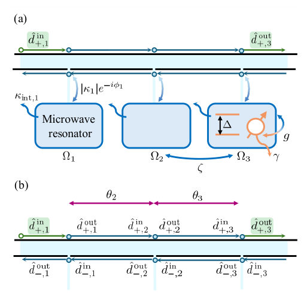
<figcaption class="paper-figure-caption"><b>Fig 1.</b> Figure 1. Conceptual depiction of the setup. (a) The superconducting microwave circuit consists of three hanger- type, lumped-element resonators of frequencies Ω1, Ω2, Ω3, which are coupled to a common transmission line with cou- pling strengths |κi|e−iϕi. One of the resonators is strongly coupled, with coupling strength g, to the spin ensemble with resonance frequency ∆. We investigate the complex transmis- sion parameter S21 = ⟨ˆdout +,3⟩/ ⟨ˆdin +,1⟩in order to study multi- mode interference and dark-state formation. We also consider the dissipation rates κint,i and γ for the resonators and the spin ensemble, respectively. (b) Left and right propagation channel through the transmission...</figcaption>
</figure>
<figure class="paper-figure-card">
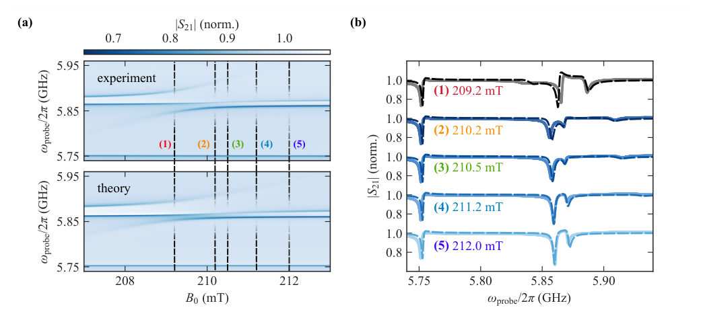
<figcaption class="paper-figure-caption"><b>Fig 2.</b> Figure 2. Measured and modeled cwESR spectra. (a) Measured (upper panel) and simulated (lower panel) microwave absorption amplitude |S21| as a function of the applied magnetic field B0 and the probe frequency ωprobe. The modeled microwave absorption amplitude is based on Eq. 1 and the coupling rates summarized in Tab. I. Vertical lines (1)−(5) represent B0−fixed cuts represented in panel (b). (b) Comparison of the measured (solid line, light colored) and modeled (dashed line, dark colored) data showing the frequency-dependent microwave absorption amplitude for fixed magnetic fields.</figcaption>
</figure>
<figure class="paper-figure-card">
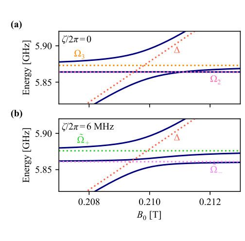
<figcaption class="paper-figure-caption"><b>Fig 3.</b> Figure 3. Simulated energy spectrum for the tripartite system. Calculated energies of the effective three-component system formed by the spin ensemble and resonators 2 and 3, as a function of B0, for the fitted parameters in Table I, com- paring (a) ζ/2π = 0, (b) ζ/2π = 6 MHz. The dotted lines indicate the bare energies of the modes that are hybridizing: (a) ∆, Ω2, and Ω3, (b) ∆, ˜Ω+, and ˜Ω−.</figcaption>
</figure>
<figure class="paper-figure-card">
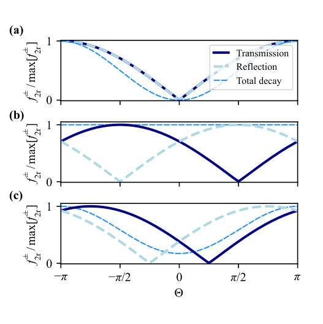
<figcaption class="paper-figure-caption"><b>Fig 4.</b> Figure 4. Dark and directionally dark modes in the two-coupled-resonator system. Dark state condition f ± 2r/max[f ± 2r] for | ˜ψ+⟩, as a function of the propagation phase Θ, for complex κi = |κi|e−iϕi, and for both propagation chan- nels ˆL±. The diagnostic function F2r/max[F2r] is included. A bidirectional dark state appears for f ± 2r = 0. The system pa- rameters Ω2,3, ζ, and κ2,3, are chosen such that they satisfy Eq. (14). (a) The phases ϕ2 = 3π/2 and ϕ3 = −π/2 fulfill |ϕ3 −ϕ2| = 2π (l = 1), so a dark state to both p = ± appears at Θ = 0. (b) The phases ϕ2 = 3π/2 and ϕ3 = π/2, and (c) ϕ2 = 7π/4 and ϕ3 = π/4, are chosen such that the dark state condition happens at a different Θ for...</figcaption>
</figure>
<figure class="paper-figure-card">
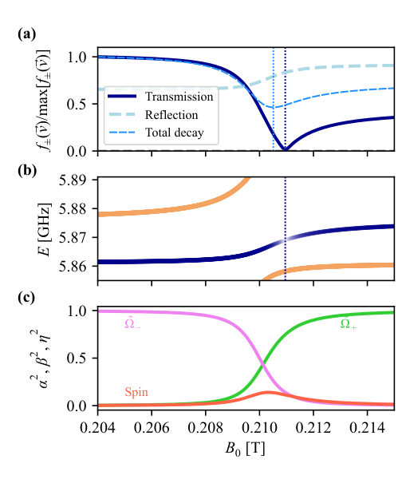
<figcaption class="paper-figure-caption"><b>Fig 5.</b> Figure 5. Dark state in the tripartite system. (a) Dark state condition for the central eigenstate of the Hamil- tonian in Eq. (10), evaluated through f±(⃗v)/ max(f±(⃗v)), using the parameters ⃗v = (κ2, κ3, α, β, φ, θ) obtained from the fitting in Table I. The observed dark state is only dark to transmission. (b) Energy spectrum for the same fitting parameters. The opacity of the lines corresponds to the value of |f+(⃗v)|/ max(|f+(⃗v)|), which positions a dark state for the central branch at B0 ≈211 mT. (c) Composition of the cen- tral eigenstate of the system as a function of B0.</figcaption>
</figure>
</div>

<p><strong>Summary.</strong> The paper investigates strong light-matter interactions in a complex hybrid system combining three superconducting microwave cavities and an electron spin ensemble. By modeling the system using input-output theory, the authors demonstrate that the multi-mode nature allows for the formation of dark states. These engineered dark states are crucial because they can protect quantum information stored in the spin ensemble by suppressing unwanted coupling to the surrounding environment.</p>
<p><strong>Why it may be interesting.</strong> This work is highly relevant as it pushes the boundaries of cavity QED by integrating multiple coupled resonators with solid-state spins. The ability to engineer protected quantum states (dark states) via environmental coupling control is a key theme in modern open quantum systems research.</p>
<details>
<summary>Detailed structure</summary>
<p><strong>Main problem.</strong> The research explores how controlled coupling of multiple superconducting microwave cavities to an electron spin ensemble can generate signatures of strong coupling and engineer dark states.</p>
<p><strong>Main result.</strong> The study confirms the existence of a multi-mode strong-coupling regime and observes spectral dips indicative of dark state formation, which suppresses coupling to the measurement environment.</p>
<p><strong>Method.</strong> The system is modeled using an input-output formalism derived from a complex Hamiltonian, with experimental verification through continuous wave electron spin resonance (cwESR) measurements.</p>
<p><strong>Model / system.</strong> The physical platform is a hybrid microwave circuit comprising three superconducting resonators coupled together and interacting with a paramagnetic electron spin ensemble. The model incorporates terms for cavity-cavity, spin dynamics, spin-cavity coupling (Tavis-Cummings type), and coupling to the external transmission line.</p>
<p><strong>Key observables.</strong> Complex microwave transmission $S_{21}$ as a function of probe frequency ($\omega_{	ext{probe}}$) and static magnetic field ($B_0$); Rabi splittings; suppressed absorption dips.</p>
<p><strong>Important parameters / regimes.</strong> Resonator frequencies (e.g., 5.753 GHz, 5.864 GHz, 5.873 GHz); inter-cavity coupling ($\zeta_{23}/(2\pi) = 6.0 	ext{ MHz}$); Cooperativity parameters ($C_\pm$).</p>
<p><strong>Assumptions / limitations.</strong> The analysis often assumes the single-excitation limit and neglects sub-ensemble distribution of spin resonance frequencies; some theoretical analyses assume point-like coupling to the transmission line.</p>
<p><strong>Figures summary.</strong> Figure 1 conceptually shows the setup measuring $S_{21}$. Figure 2 compares measured vs. simulated microwave absorption amplitudes $|S_{21}|$ across varying magnetic fields, while Figure 8 and 9 analyze the theoretical conditions for dark state formation based on coupling parameters.</p>
<p><strong>Paper structure.</strong> The paper progresses from defining the multi-cavity hybrid system Hamiltonian to applying the input-output formalism for spectral analysis. It details observations of field-independent modes, strong coupling splittings, and finally analyzes the specific conditions under which a stationary dark state can form by suppressing radiation into the measurement channel.</p>
</details>
<details>
<summary>Abstract</summary>
<p>Spin ensembles are considered as potential candidates for quantum memory and quantum enhanced sensing applications. Here, we explore the controlled coupling of multiple superconducting microwave cavities to a spin ensemble, which shows signatures of strong coupling and, due to the multi-mode character, the formation of dark states. In particular, the latter are of interest, as they provide a potential pathway to enhance memory times and enable protected storage of non-classical states in spin ensembles due to the suppressed coupling to the circuit environment. We model the spin multi-cavity hybrid to reproduce the spectra and extract characteristic coupling strengths using the input-output formalism.</p>
</details>
<p><sub><a href="#top">↑ back to top</a></sub></p>

<p><a id="paper-2608.05426"></a></p>
<h3 id="qutrit-entanglement-and-joint-multi-parameter-estimation-in-an-optical-clock-platform">⭐ <a href="http://arxiv.org/abs/2608.05426v1">Qutrit entanglement and joint multi-parameter estimation in an optical clock platform</a></h3>
<p><strong>Highlighted author(s):</strong> Immanuel Bloch<br>
<strong>Authors:</strong> Ohad Lib, Shuheng Liu, Maximilian Ammenwerth, Hendrik Timme, Shijia Sun, Qiongyi He, Marcus Huber, Giuseppe Vitagliano, Immanuel Bloch, Johannes Zeiher<br>
<strong>Type:</strong> experiment · <strong>Category:</strong> other · <strong>PDF:</strong> <a href="https://arxiv.org/pdf/2608.05426v1">https://arxiv.org/pdf/2608.05426v1</a><br>
<strong>Analysis basis:</strong> full PDF text, analyzed in chunks
<strong>Topic relevance:</strong> <code>entanglement &amp; information structure</code> <strong>3/5</strong> · <code>QC/QI experiment</code> <strong>2/5</strong> · <code>analog quantum simulation</code> <strong>1/5</strong> · <code>quantum measurements</code> <strong>1/5</strong> · <code>quantum optics experiment</code> <strong>1/5</strong></p>
<div class="figure-strip-hint">↔ Scroll figures horizontally</div>
<div class="paper-figures-scroll">
<figure class="paper-figure-card">
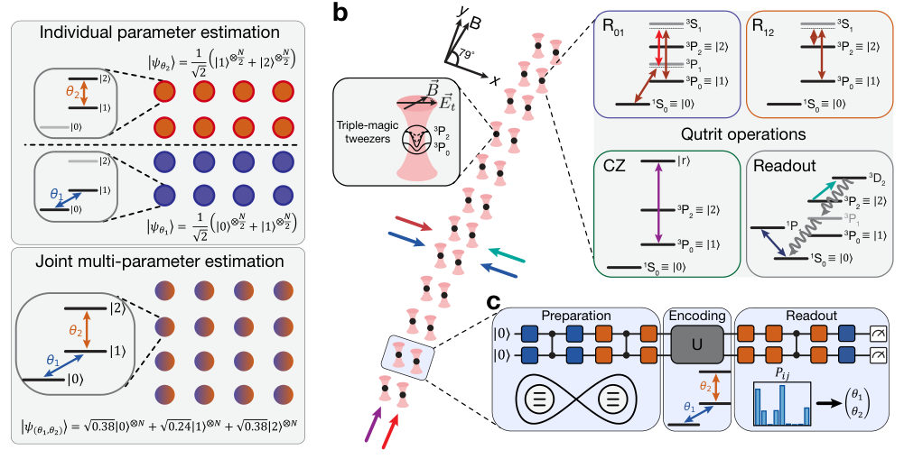
<figcaption class="paper-figure-caption"><b>Fig 1.</b> FIG. 1. Qutrit entanglement and joint multi-parameter estimation. a Illustration of individual versus joint estimation of two parameters in an optical clock. In the case of individual estimation, the atoms are split into two groups, each being prepared in a different qubit entangled state to estimate one of the parameters. Alternatively, joint estimation uses qutrit encoding and entanglement across the entire array to estimate both parameters simultaneously. Our experiment is performed for qutrit entangled pairs, for which N = 2. b Experimental setup consisting of twelve pairs of 88Sr atoms, each encoding a magically trapped qutrit in the ground state and two clock states. Qutrit operations...</figcaption>
</figure>
<figure class="paper-figure-card">
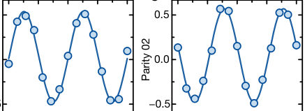
<figcaption class="paper-figure-caption"><b>Fig 2.</b> FIG. 2. Genuine qutrit entanglement. a Circuit for creating and benchmarking a qutrit entangled state encoded in the energy levels of two atoms. A phase-scanned π/2 rota- tion (Rϕ) is added when measuring parity oscillations on the different transitions. The exact rotation angles are shown in the Supplementary Information. b State population measure- ment of the qutrit entangled state. c-e Parity oscillations on the |1⟩−|2⟩, |0⟩−|1⟩, |0⟩−|2⟩transitions. In e, the |0⟩−|2⟩π/2 pulse is performed using a π rotation on the |1⟩−|2⟩transition followed by a π/2 rotation on |0⟩−|1⟩. The fitted contrasts are C12 = 0.56(1), C01 = 0.51(1), and C02 = 0.52(2) (ideal contrast is C = 2</figcaption>
</figure>
<figure class="paper-figure-card">
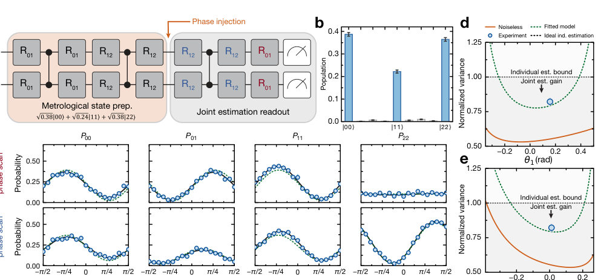
<figcaption class="paper-figure-caption"><b>Fig 3.</b> FIG. 3. Joint parameter estimation. a Circuit for joint parameter estimation. The ideal, unbalanced, entangled metro- logical state is generated, followed by a noise-robust readout circuit to jointly estimate two injected phases (see Supplementary Information for rotation angles). b Population measurement showing the desired imbalance between the qutrit states. c A model allowing for joint phase estimation given probabilities of the nine measurement outcomes is established by scanning the phases of the R01 and R12 pulses in the readout circuit. The data points are fitted using a cosine-sine fit (black curve). A model taking into account separately measured decoherence in single-qutrit...</figcaption>
</figure>
</div>

<p><strong>Summary.</strong> The paper demonstrates how to use genuine qutrit entanglement in an optical atomic clock platform to simultaneously estimate multiple physical parameters. By leveraging the higher dimensionality of the internal atomic states, they surpass the precision limits achievable by treating each parameter estimation independently. This work establishes key building blocks for quantum information science using neutral atoms.</p>
<p><strong>Why it may be interesting.</strong> This work directly pushes the boundaries of quantum sensing by moving beyond qubit limitations into high-dimensional qudit systems using neutral atoms, which is a major focus area in AMO physics and quantum metrology.</p>
<details>
<summary>Detailed structure</summary>
<p><strong>Main problem.</strong> The research addresses extending quantum metrology from single-parameter estimation (using qubits) to joint multi-parameter estimation using entangled multi-level qudits in an atomic clock platform.</p>
<p><strong>Main result.</strong> They experimentally demonstrated genuine qutrit entanglement and achieved a joint estimation variance lower than the ideal individual two-level sensing threshold, showing this advantage persists under noise.</p>
<p><strong>Method.</strong> The authors used controlled operations (like CZ gates) to generate high-dimensional entangled states in $^{88}	ext{Sr}$ atoms and then employed optimal metrological probes and readout circuits for joint phase estimation.</p>
<p><strong>Model / system.</strong> The physical system is an optical clock platform using $^{88}	ext{Sr}$ atoms trapped in triple-magic optical tweezers. The internal energy levels form a qutrit ($\{|0
angle, |1
angle, |2
angle\}$), allowing for the encoding of higher-dimensional quantum information.</p>
<p><strong>Key observables.</strong> Joint estimation variance ($Y_{	ext{joint}}$), entanglement fidelity ($F$), and comparison against individual two-level sensing thresholds.</p>
<p><strong>Important parameters / regimes.</strong> The number of atoms ($N$), the injected phases ($    heta_1,     heta_2$), and noise parameters (e.g., coherence factors $\eta$).</p>
<p><strong>Assumptions / limitations.</strong> The fidelity calculation is not fully corrected for all state preparation and measurement errors; theoretical analysis often assumes specific noise models (depolarizing/dephasing).</p>
<p><strong>Figures summary.</strong> Figures illustrate the experimental setup, demonstrate entanglement via population measurements ($P_{ii}$) and parity oscillations ($    ext{C}_{ij}$), and compare joint vs. individual estimation variances under ideal and noisy conditions.</p>
<p><strong>Paper structure.</strong> The paper progresses from establishing the physical platform and generating qutrit entanglement to theoretically constructing optimal multi-parameter probes, experimentally realizing the joint estimation, and finally analyzing noise robustness across different theoretical limits.</p>
</details>
<details>
<summary>Abstract</summary>
<p>Quantum metrology harnesses entanglement to improve measurement precision beyond classical limits. While standard protocols rely on two-level qubits to estimate a single parameter, extending them to entangled multi-level qudits enables the optimal simultaneous estimation of multiple parameters within a single probe. However, generating such multi-level entanglement and harnessing it for joint multi-parameter estimation in atomic clocks has remained an outstanding challenge. Here, we experimentally demonstrate genuine qutrit entanglement and joint multi-parameter estimation in an optical clock platform. Leveraging control over the ground state and two fine-structure clock states of $^{88}\text{Sr}$ atoms trapped in triple-magic optical tweezers, we generate a maximally entangled two-qutrit state with a loss-postselected fidelity of F = 0.85(1), certifying genuine multi-level entanglement. Taking advantage of this high-dimensional entanglement, we theoretically construct and experimentally realize an optimal two-qutrit metrological probe state and noise-robust readout circuit to simultaneously estimate injected phases on two optical clock transitions. We observe a joint estimation variance below the ideal individual two-level sensing threshold, and show theoretically that this advantage persists at state-of-the-art atom numbers under circuit-level noise. These results demonstrate the key building blocks towards quantum information science with high-dimensional states encoded in the internal energy levels of neutral atoms.</p>
</details>
<p><sub><a href="#top">↑ back to top</a></sub></p>

<p><a id="paper-2608.05955"></a></p>
<h3 id="dynamical-phase-transition-in-generalized-dicke-model-with-strongly-interacting-trapped-rydberg-ions"><a href="http://arxiv.org/abs/2608.05955v1">Dynamical phase transition in generalized Dicke model with strongly interacting trapped Rydberg ions</a></h3>
<p><strong>Authors:</strong> Manish Chaudhary, Rejish Nath, Weibin Li<br>
<strong>Type:</strong> theory · <strong>Category:</strong> other · <strong>PDF:</strong> <a href="https://arxiv.org/pdf/2608.05955v1">https://arxiv.org/pdf/2608.05955v1</a><br>
<strong>Analysis basis:</strong> full PDF text, analyzed in chunks
<strong>Topic relevance:</strong> 🔥 <code>driven-dissipative phase transition</code> <strong>5/5</strong> · 🔥 <code>Rydberg arrays</code> <strong>4/5</strong> · 🔥 <code>analog quantum simulation</code> <strong>4/5</strong> · 🔥 <code>methods for driven-dissipative</code> <strong>4/5</strong> · 🔥 <code>non-equilibrium dynamics</code> <strong>4/5</strong> · <code>correlated / nonlocal dissipation</code> <strong>3/5</strong> · <code>exotic spin models in light-matter</code> <strong>3/5</strong> · <code>non-equilibrium universality</code> <strong>3/5</strong> · <code>Dicke superradiance</code> <strong>2/5</strong> · <code>entanglement &amp; information structure</code> <strong>2/5</strong> · <code>Keldysh / 2PI / non-Gaussian methods</code> <strong>1/5</strong> · <code>Tavis-Cummings &amp; cavity-many-emitter</code> <strong>1/5</strong> · <code>correlated cavity matter</code> <strong>1/5</strong> · <code>scars &amp; prethermalization</code> <strong>1/5</strong></p>
<div class="figure-strip-hint">↔ Scroll figures horizontally</div>
<div class="paper-figures-scroll">
<figure class="paper-figure-card">
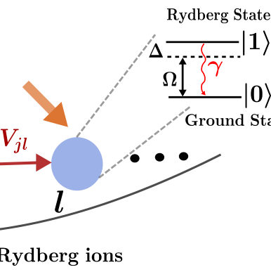
<figcaption class="paper-figure-caption"><b>Fig 1.</b> Figure 1: Schematic illustration of the system of trapped Rydberg ions: A linear chain of N trapped Rydberg ions is modeled as an effective two-level system with ground state |0〉and excited Rydberg state |1〉. A standing-wave laser couples the spin states to the center-of-mass (COM) vibrational mode at a frequency ω. In the side panel, we represent the energy level diagram for the internal states which are coherently driven by a laser with Rabi frequency Ωand detuning ∆. The state |1〉decays to the ground state |0〉at a spontaneous decay rate γ.</figcaption>
</figure>
<figure class="paper-figure-card">
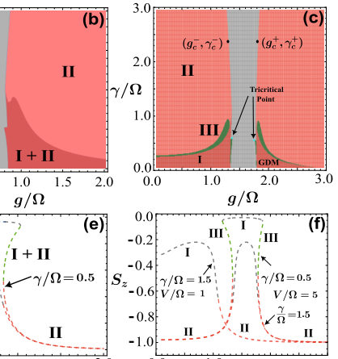
<figcaption class="paper-figure-caption"><b>Fig 2.</b> Figure 2: Dynamical phase diagram for different controlling parameters (1) in the dissipative model: The MF phase diagram is obtained from the fixed-point analysis of Eq. (6) (a) as a function of the spin phonon coupling g/ω and Rabi frequency Ω/ω with no dissipation and no Rydberg ion interactions V = 0 (Dicke Model); (b) as a function of normalized parameters g/Ωand γ/Ωwith ion decay (3) (dissipative Dicke model); (c) as a function of normalized parameters g/Ωand γ/Ωwith ion interactions Vjl ̸= 0 (generalized dissipative Dicke model); (d)-(e) Corresponding variation of MF spin expectation value Sz as a function of g/Ωfor different cases similar to (a)-(c) respectively. For cases (b)-(f)...</figcaption>
</figure>
<figure class="paper-figure-card">
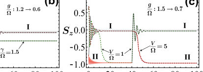
<figcaption class="paper-figure-caption"><b>Fig 3.</b> Figure 3: Effect of quenching on the system dynamics for (a) simplest Dicke model with no Rydberg ion interactions V = 0, (b) dissipative Dicke model (3) for two different γ/Ω= 0.5,1.5 and (c) generalized Dicke model with ion interactions Vjl ̸= 0 at γ/Ω= 0.5. For all cases we choose N = 30 and ω = NΩ. The dis- tinct phases are marked with Roman letters. The different initial conditions are used for our calculation: (S0 x = 0,S0 y = 0.4,S0 z = 0.3) represented as dotted line and</figcaption>
</figure>
<figure class="paper-figure-card">
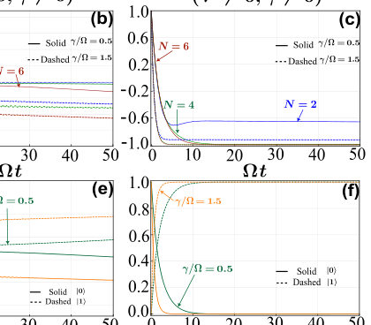
<figcaption class="paper-figure-caption"><b>Fig 4.</b> Figure 4: Dynamics of dissipative model (3): (a)-(c) Exact time evolution of the density matrix, spin expectation values (15); (d)-(f) probability of occupancy of the ground and excited states (N = 6 used in (e),(f)) as a function of time t with no dissipation (V = 0,γ = 0), with dissipation (V = 0,γ ̸= 0) and with Rydberg interac- tions (V ̸= 0,γ ̸= 0) respectively for various system sizes. We choose g/Ω= 0.5 for all cases and V/Ω= 5.</figcaption>
</figure>
<figure class="paper-figure-card">
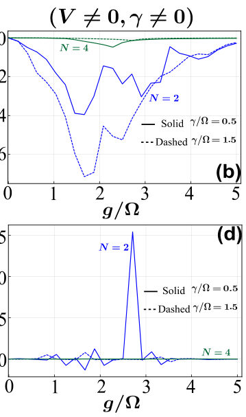
<figcaption class="paper-figure-caption"><b>Fig 5.</b> Figure 5: Liouvillian spectrum: (a),(b) real part of the lowest nonzero Liouvillian eigenvalue Re[λ1]; (c),(d) imaginary part of the lowest nonzero Liouvillian eigen- value Im[λ1] as a function of the normalized spin-phonon coupling g/Ωin the ab- sence and presence of Rydberg interactions respectively for different system size N and dissipation strengths γ/Ω. The solid and dashed lines denote the dynamics for dissipation strengths γ/Ω= 0.5 and γ/Ω= 1.5 respectively. For (b),(d) cases we choose V/Ω= 5.</figcaption>
</figure>
</div>

<p><strong>Summary.</strong> The paper analyzes dynamical phase transitions in a model of strongly interacting Rydberg ions coupled to phonons. Using mean-field theory and advanced quantum diagnostics like the Loschmidt echo, the authors map out complex phase diagrams influenced by ion interactions. The findings demonstrate that these interactions drastically alter both the equilibrium phases and the non-equilibrium relaxation dynamics of the system.</p>
<p><strong>Why it may be interesting.</strong> This work is highly relevant as it combines trapped ion platforms (a key AMO system) with complex open quantum dynamics and many-body physics concepts like DPTs, making it a rich area for theoretical investigation in quantum optics.</p>
<details>
<summary>Detailed structure</summary>
<p><strong>Main problem.</strong> The study investigates dynamical phase transitions (DPTs) occurring in a generalized dissipative Dicke model.</p>
<p><strong>Main result.</strong> The analysis reveals that Rydberg ion interactions significantly modify the mean-field phase diagram, leading to distinct phases and the emergence of tricritical points. Furthermore, non-equilibrium dynamics exhibit signatures like slow relaxation near these transitions.</p>
<p><strong>Method.</strong> The study employs a combination of Mean-Field (MF) analysis for steady states and quantum diagnostics like the Loschmidt echo and entropy growth for finite-size, non-equilibrium dynamics.</p>
<p><strong>Model / system.</strong> The system is trapped Rydberg ions arranged in a linear array, coupled to external vibrational modes (phonons). The dynamics are governed by a Master equation incorporating Rabi coupling, spin-phonon interaction, laser driving, and dissipation.</p>
<p><strong>Key observables.</strong> Spin average ($\langle \sigma_j 
angle$), phonon averages ($X, P$), Von Neumann entropy, Loschmidt echo, and steady-state polarization ($S_z$).</p>
<p><strong>Important parameters / regimes.</strong> Rydberg interaction strength ($V_{jl}$), spin-phonon coupling ($g$), Rabi frequency ($\Omega$), dissipation rate ($\gamma$), and detuning ($\Delta$).</p>
<p><strong>Assumptions / limitations.</strong> The analysis relies on Mean-Field approximations, including product approximations for coupled spin and bosonic operators.</p>
<p><strong>Figures summary.</strong> Figure 1 schematically shows the ion chain setup. Figure 2 presents MF phase diagrams for different Dicke model regimes (closed, dissipative, generalized). Figure 3 illustrates system dynamics following parameter quenches.</p>
<p><strong>Paper structure.</strong> The paper first establishes the Hamiltonian and Master equation governing the system. It then analyzes steady states using Mean-Field theory to map out the phase diagram, identifying critical points. Finally, it investigates non-equilibrium quantum dynamics using diagnostics like the Loschmidt echo to characterize relaxation pathways.</p>
</details>
<details>
<summary>Abstract</summary>
<p>We study dynamical phase transitions in the generalized dissipative Dicke model in an array of trapped Rydberg ions, where their density-density interactions compete with the collective spin-phonon coupling, laser driving and dissipation. This setting offers a versatile approach to study equilibrium as well as non-equilibrium many-body phenomena, as parameters, such as the Ising interaction, laser-ion and spin-phonon coupling can be tuned. Through analyzing the mean-field phase diagram, we find a variety of distinct phases and the emergence of a tricritical point that are sensitively dependent of the interaction between Rydberg ions. We then study the quantum dynamics for a finite system size and characterize parameter dependent dynamics using the spin average, entropy, and Loschmidt echo. Distinctive signatures of the dynamical phases, such as slow relaxation and metastability, arise near the phase transition. This analysis predicts rich quantum dynamics of the finite system that link to the non-equilibrium mean-field phases. Our study widens the exploration of collective and non-equilibrium phases in Dicke models, and reveals that the Rydberg ion interaction drastically affects the phase diagram and dynamics.</p>
</details>
<p><sub><a href="#top">↑ back to top</a></sub></p>

<p><a id="paper-2608.05289"></a></p>
<h3 id="theory-of-measurement-altered-criticality"><a href="http://arxiv.org/abs/2608.05289v1">Theory of Measurement-Altered Criticality</a></h3>
<p><strong>Authors:</strong> Kabir Khanna, Sara Murciano, Romain Vasseur<br>
<strong>Type:</strong> theory · <strong>Category:</strong> statistical mechanics · <strong>PDF:</strong> <a href="https://arxiv.org/pdf/2608.05289v1">https://arxiv.org/pdf/2608.05289v1</a><br>
<strong>Analysis basis:</strong> full PDF text, analyzed in chunks
<strong>Topic relevance:</strong> 🔥 <code>quantum measurements</code> <strong>5/5</strong> · 🔥 <code>measurement-induced transitions</code> <strong>4/5</strong> · <code>Keldysh / 2PI / non-Gaussian methods</code> <strong>2/5</strong> · <code>non-equilibrium universality</code> <strong>2/5</strong> · <code>analog quantum simulation</code> <strong>1/5</strong> · <code>correlated / nonlocal dissipation</code> <strong>1/5</strong> · <code>driven-dissipative phase transition</code> <strong>1/5</strong> · <code>entanglement &amp; information structure</code> <strong>1/5</strong> · <code>methods for driven-dissipative</code> <strong>1/5</strong> · <code>non-equilibrium dynamics</code> <strong>1/5</strong></p>
<div class="figure-strip-hint">↔ Scroll figures horizontally</div>
<div class="paper-figures-scroll">
<figure class="paper-figure-card">
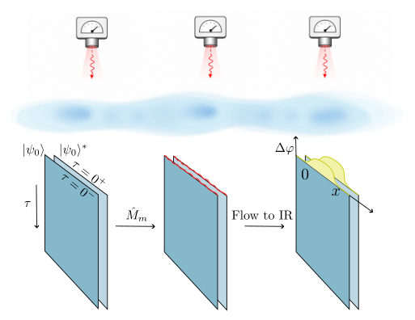
<figcaption class="paper-figure-caption"><b>Fig 1.</b> FIG. 1. Setup. Top: Schematic illustration of a TLL (blue). Weak measurements are performed on the entire system as shown through the measurement apparatus (red). Bottom: Left: Path integral representation of the ground state den- sity matrix |ρ0⟩⟩= |ψ0⟩|ψ∗ 0⟩with the ket and bra defined on the slices τ = 0−and τ = 0+, respectively. Middle: The weak measurement induces a boundary perturbation (red). Right: The replica calculation shows that the averaged long- distance density and phase fluctuations are controlled by field fluctuations ∆φ corresponding to phase-slips between the points 0 and x in the infrared (IR).</figcaption>
</figure>
<figure class="paper-figure-card">
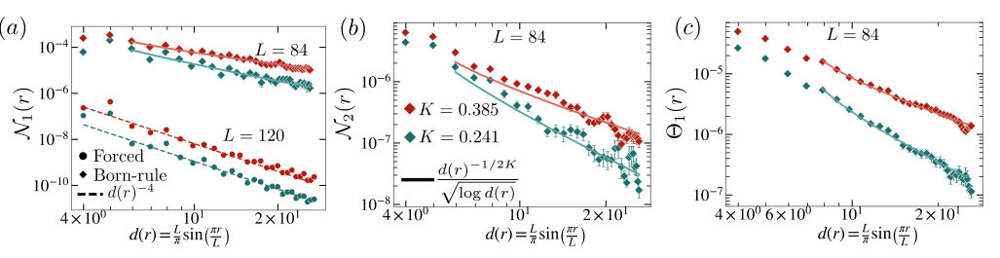
<figcaption class="paper-figure-caption"><b>Fig 2.</b> FIG. 2. Scaling of measurement-altered correlation functions with chord length d(r) for measurement strength γ = 0.7. Green and red markers correspond to ground states with Luttinger parameters K = 0.241 and K = 0.385, re- spectively. We use P</figcaption>
</figure>
<figure class="paper-figure-card">
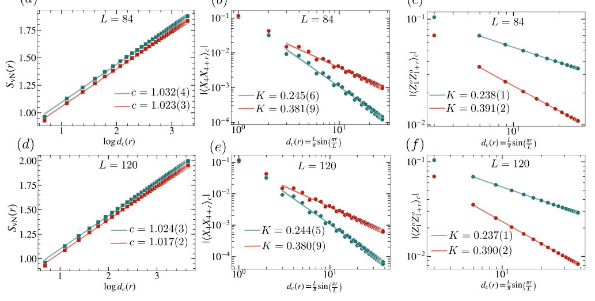
<figcaption class="paper-figure-caption"><b>Fig 3.</b> FIG. 1: Extracting the central charge c and Luttinger parameter K. Green markers show data for the ground state at (U1, U2) = (10, 2.5), while red markers correspond to (U1, U2) = (10, 1.0). Fits are shown as solid lines of the corresponding color with reduced opacity. (a,d) Von Neumann entanglement entropy SvN(r) plotted against log dc(r) for L = 84 and L = 120, respectively. The central charge is inferred from the slope c/3 from Eq. (84). (b,e) Connected correlator |⟨X4X4+r⟩c| plotted against dc(r) and fitted to dc(r)−1/(2K) for L = 84 and L = 120, respectively. (c,f) Correlator ⟨Zo 1Zo 1+r⟩plotted against dc(r), and fitted to dc(r)−2K for L = 84 and L = 120, respectively.</figcaption>
</figure>
<figure class="paper-figure-card">
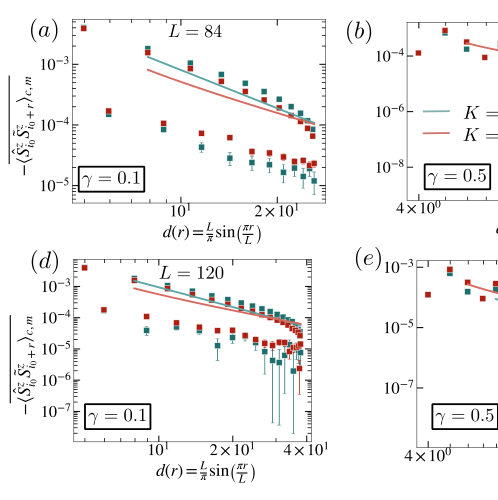
<figcaption class="paper-figure-caption"><b>Fig 4.</b> FIG. 2: Scaling of measurement-averaged correlator −P</figcaption>
</figure>
<figure class="paper-figure-card">
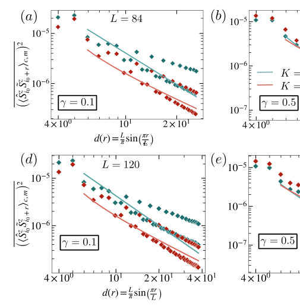
<figcaption class="paper-figure-caption"><b>Fig 5.</b> FIG. 3: Scaling of measurement-averaged correlator P</figcaption>
</figure>
</div>

<p><strong>Summary.</strong> This paper develops a theory detailing how local measurements perturb the critical behavior of gapless quantum matter like Tomonaga-Luttinger liquids. Using replica calculations, the authors show that this measurement-induced randomness causes correlation functions to decay with specific power laws featuring logarithmic corrections. This establishes a new regime of criticality beyond standard theoretical models.</p>
<p><strong>Why it may be interesting.</strong> This work directly addresses the non-trivial interplay between quantum measurements and fundamental critical phenomena, providing a quantitative framework for how measurement backaction modifies universal properties in 1D systems.</p>
<details>
<summary>Detailed structure</summary>
<p><strong>Main problem.</strong> The theory investigates how local measurements perturb and alter the universal long-range correlations of gapless quantum matter, specifically Tomonaga-Luttinger liquids.</p>
<p><strong>Main result.</strong> Average correlators decay with universal power laws accompanied by logarithmic corrections when measurements are relevant, a signature distinct from both forced measurements and conventional critical scaling.</p>
<p><strong>Method.</strong> The authors employ replica instanton calculations to handle the intrinsic randomness of measurement records, complementing this with matrix-product-state calculations for verification.</p>
<p><strong>Model / system.</strong> The primary model is the Tomonaga-Luttinger liquid (TLL), a 1D quantum critical state described by a continuum field theory derived from lattice Hamiltonians. The analysis focuses on weakly monitoring these systems.</p>
<p><strong>Key observables.</strong> Connected density and phase fluctuation correlators ($\langle\hat{n}(x)\hat{n}(0)
angle$, $\langle e^{i[	heta(x)-	heta(0)]} 
angle$), and the full multifractal spectrum of correlation moments.</p>
<p><strong>Important parameters / regimes.</strong> The Luttinger parameter ($K$) dictates the algebraic decay, while the measurement strength ($\gamma$) controls the perturbation regime; the focus is on $K < 1/2$ where perturbations are relevant.</p>
<p><strong>Assumptions / limitations.</strong> The analysis assumes the low-energy physics can be described by 1+1d Conformal Field Theories (CFTs) and utilizes the replica trick to average over measurement outcomes.</p>
<p><strong>Figures summary.</strong> Figures compare theoretical predictions for density and phase correlators under weak measurements against those from forced measurements, illustrating the unique decay behavior induced by randomness.</p>
<p><strong>Paper structure.</strong> The paper develops a general theory of measurement-altered criticality, applying it first to TLLs using replica methods to calculate Born-averaged observables. It contrasts these results with standard critical scaling and provides numerical support via MPS calculations.</p>
</details>
<details>
<summary>Abstract</summary>
<p>Local measurements can alter long-range correlations in gapless quantum matter. We propose a theory of weakly-monitored Tomonaga-Luttinger liquids, a broad class of quantum critical states in one dimension. In order to address the intrinsic randomness of the measurement record, we develop a replica instanton calculation to study Born-averaged observables. We find that when measurements are relevant, average correlators of density and phase fluctuations decay at long distances as universal power laws with logarithmic corrections, a feature we argue is peculiar to measurement-induced randomness. We characterize the full multifractal spectrum of moments of correlations functions, revealing broad, strongly non-gaussian fluctuations across the ensemble of post-measurement states. We support these analytic results with matrix-product-state calculations, and provide a general picture of measurement-altered criticality for ground states described by 1+1d conformal field theories. Our results establish that physical measurements alter critical quantum states in a manner that lies beyond both forced measurements and conventional critical scaling.</p>
</details>
<p><sub><a href="#top">↑ back to top</a></sub></p>

<p><a id="paper-2608.05494"></a></p>
<h3 id="what-meter-interference-can-tell-us-about-the-statistics-of-weak-measurements"><a href="http://arxiv.org/abs/2608.05494v1">What meter interference can tell us about the statistics of weak measurements</a></h3>
<p><strong>Authors:</strong> Holger F. Hofmann, Tomonori Matsushita, Masayoshi Isobe, Jonte R. Hance<br>
<strong>Type:</strong> theory · <strong>Category:</strong> other · <strong>PDF:</strong> <a href="https://arxiv.org/pdf/2608.05494v1">https://arxiv.org/pdf/2608.05494v1</a><br>
<strong>Analysis basis:</strong> full PDF text, analyzed in chunks
<strong>Topic relevance:</strong> 🔥 <code>quantum measurements</code> <strong>5/5</strong> · <code>measurement-induced transitions</code> <strong>1/5</strong></p>
<div class="figure-strip-hint">↔ Scroll figures horizontally</div>
<div class="paper-figures-scroll">
<figure class="paper-figure-card">
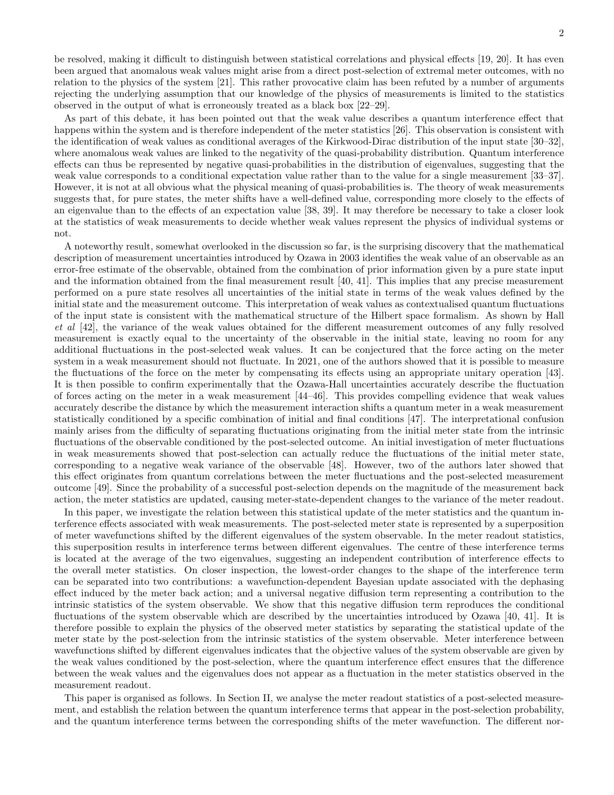
<figcaption class="paper-figure-caption"><b>Fig 1.</b> Low-resolution page preview, page 2</figcaption>
</figure>
<figure class="paper-figure-card">
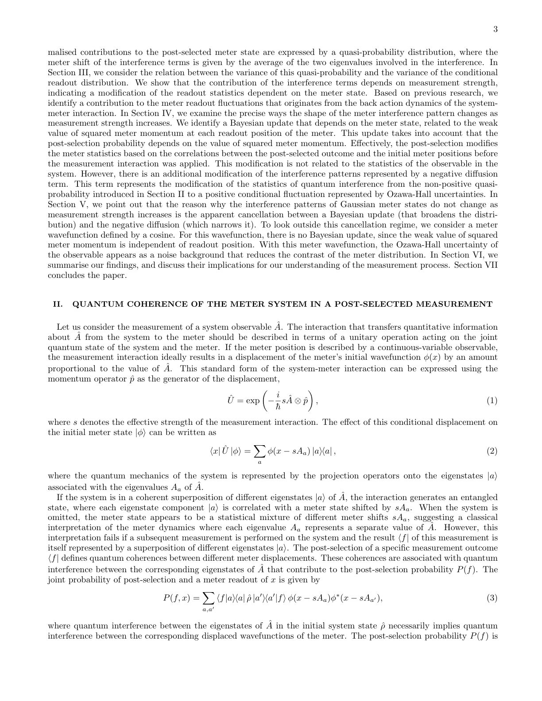
<figcaption class="paper-figure-caption"><b>Fig 2.</b> Low-resolution page preview, page 3</figcaption>
</figure>
<figure class="paper-figure-card">
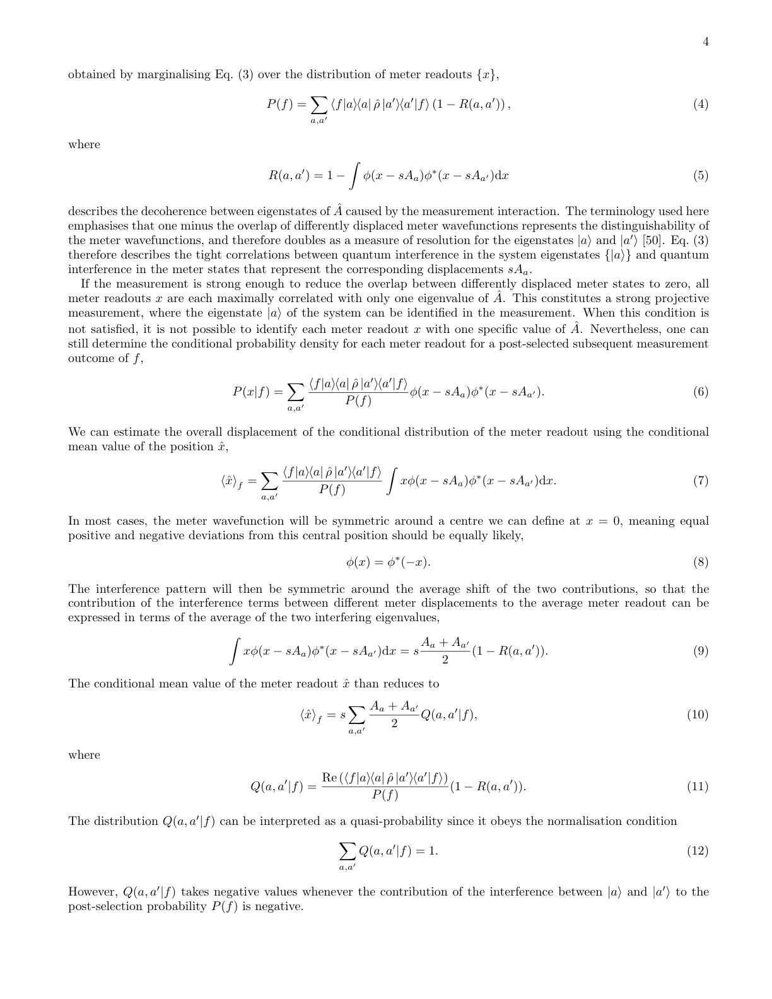
<figcaption class="paper-figure-caption"><b>Fig 3.</b> Low-resolution page preview, page 4</figcaption>
</figure>
<figure class="paper-figure-card">
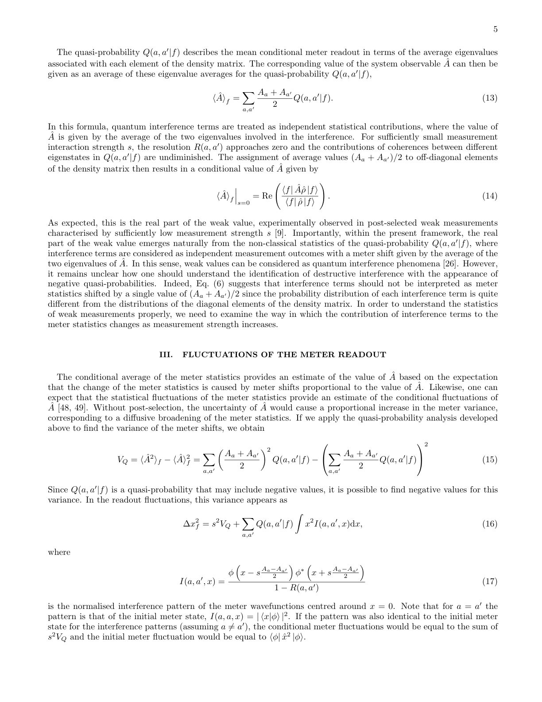
<figcaption class="paper-figure-caption"><b>Fig 4.</b> Low-resolution page preview, page 5</figcaption>
</figure>
<figure class="paper-figure-card">
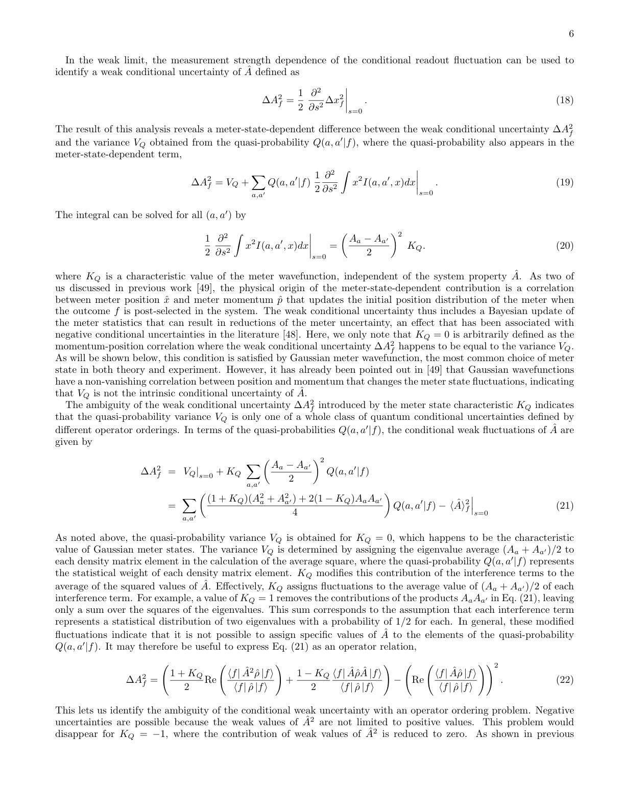
<figcaption class="paper-figure-caption"><b>Fig 5.</b> Low-resolution page preview, page 6</figcaption>
</figure>
</div>

<p><strong>Summary.</strong> This paper theoretically analyzes how interference patterns in the readout statistics of a meter used in a weak measurement can reveal information about the system's underlying quantum properties. By relating interference terms in the post-selection probability to fluctuations in the meter reading, the authors demonstrate that these statistical details allow for the objective determination of weak values. This provides a rigorous framework for interpreting measurements where standard assumptions about classical statistics break down.</p>
<p><strong>Why it may be interesting.</strong> This work provides a deep theoretical understanding of measurement contextuality and weak measurements, which is highly relevant for quantum optics and open quantum systems where continuous monitoring or weak coupling is central to the physics.</p>
<details>
<summary>Detailed structure</summary>
<p><strong>Main problem.</strong> The paper investigates how quantum interference effects, specifically those arising from meter readout statistics, can reveal fundamental details about weak measurements.</p>
<p><strong>Main result.</strong> It establishes a universal relationship between quantum interference in the post-selection probability and the interference observed in the meter readout statistics. This analysis shows that these interference terms correct for measurement fluctuations, allowing objective values to be determined by weak values.</p>
<p><strong>Method.</strong> The authors perform a careful theoretical analysis of the quantum dynamics of an interacting system (the observable) and a continuous variable meter during post-selection. They utilize quasi-probability distributions to track interference effects.</p>
<p><strong>Model / system.</strong> The model involves a general weak measurement setup where a system observable $\hat{A}$ interacts unitarily with a meter whose position is continuously measured. The analysis focuses on the resulting joint probability distribution $P(f, x)$ after post-selection ($f$).</p>
<p><strong>Key observables.</strong> Quantum interference in the post-selection probability; quantum interference in the meter readout statistics; weak values ($\langle A \rangle_w$); conditional fluctuations (e.g., Ozawa-Hall uncertainty).</p>
<p><strong>Important parameters / regimes.</strong> Measurement strength ($s$), which dictates whether the measurement is weak or projective.</p>
<p><strong>Assumptions / limitations.</strong> The analysis assumes that quantum interference effects are measurable in the meter readout statistics and that these statistics provide more information than just conditional averages.</p>
<p><strong>Paper structure.</strong> The paper first establishes the general framework by analyzing the joint probability of post-selection and meter readout. It then details how interference terms modify both the average value and, crucially, the conditional fluctuations (variance) observed in the meter.</p>
</details>
<details>
<summary>Abstract</summary>
<p>It is widely assumed that the quantum fluctuations of the meter readout in a weak measurement make it impossible to identify the contributions originating from the individual values of the physical property observed in the measurement. Here, we show that a careful analysis of the quantum dynamics of the meter system allows us to identify a universal relation between quantum interference in the post-selection probability, and quantum interference in the statistics of the meter readout. The analysis reveals that quantum interference modifies the readout distribution of the meter in two ways, a diffusion term that identifies the appropriate operator ordering in the post-selected variance of the observed system property, and a wavefunction-dependent update of the initial meter statistics based on the effect of back action on the post-selection probability. Our results show that the statistical patterns described by meter interference provide important details about the physics of post-selection in weak measurements, allowing us to exclude the possibility of statistical artefacts in the experimental observation of weak values.</p>
</details>
<p><sub><a href="#top">↑ back to top</a></sub></p>

<p><a id="paper-2608.05312"></a></p>
<h3 id="unidirectional-dark-to-bright-rescue-in-cavity-coupled-quantum-transport"><a href="http://arxiv.org/abs/2608.05312v1">Unidirectional Dark-to-Bright Rescue in Cavity-Coupled Quantum Transport</a></h3>
<p><strong>Authors:</strong> Jack Diab, Arpit Arora, Taylor L. Patti, Prineha Narang<br>
<strong>Type:</strong> theory · <strong>Category:</strong> other · <strong>PDF:</strong> <a href="https://arxiv.org/pdf/2608.05312v1">https://arxiv.org/pdf/2608.05312v1</a><br>
<strong>Analysis basis:</strong> full PDF text, analyzed in chunks
<strong>Topic relevance:</strong> 🔥 <code>analog quantum simulation</code> <strong>4/5</strong> · 🔥 <code>correlated / nonlocal dissipation</code> <strong>4/5</strong> · 🔥 <code>methods for driven-dissipative</code> <strong>4/5</strong> · <code>Tavis-Cummings &amp; cavity-many-emitter</code> <strong>3/5</strong> · <code>correlated cavity matter</code> <strong>3/5</strong> · <code>driven-dissipative phase transition</code> <strong>3/5</strong> · <code>non-equilibrium dynamics</code> <strong>3/5</strong> · <code>non-equilibrium universality</code> <strong>2/5</strong> · <code>superradiant laser</code> <strong>2/5</strong> · <code>Dicke superradiance</code> <strong>1/5</strong> · <code>Keldysh / 2PI / non-Gaussian methods</code> <strong>1/5</strong> · <code>entanglement &amp; information structure</code> <strong>1/5</strong></p>
<div class="figure-strip-hint">↔ Scroll figures horizontally</div>
<div class="paper-figures-scroll">
<figure class="paper-figure-card">
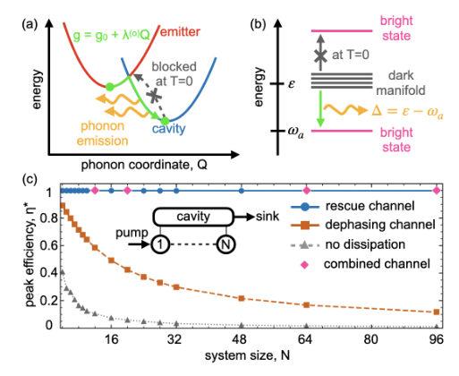
<figcaption class="paper-figure-caption"><b>Fig 1.</b> FIG. 1. Unidirectional dark-to-bright rescue channel. (a) The non-Condon exchange between quantum emitter and phononic bath modifies the light-matter coupling making phonon emission and absorption causal with transitions in quantum system which opens a one-way energy dump for the quantum system via phonon emission. (b) This implies a po- laritonic pathway for relxation from dark manifold into bright state which is unidirectional due to vanishing cavity weight of dark states. (c) The rescue channel leads to transport in- dependent of system size shown here via the peak efficiency η∗vs. system size N (cavity drain, γrec and γdeph optimized per N); g = 1.5 meV, avergae over 15 disorder...</figcaption>
</figure>
<figure class="paper-figure-card">
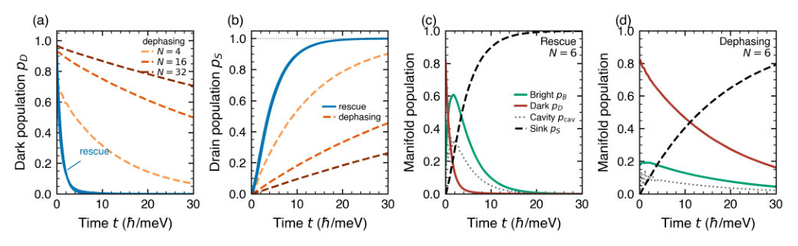
<figcaption class="paper-figure-caption"><b>Fig 2.</b> FIG. 2. Cavity-drain transport dynamics at matched rates γrec = γdeph = 1.0 meV, g = 1.5 meV, δt = 0.5 meV, γlead = 0.5 meV; ensemble-averaged over 15 disorder realizations in (a),(b) and 20 in (c),(d). (a) Dark-manifold population and (b) cumulative drain population (transport efficiency η = pS) vs. time for system sizes N = 4, 16, 32: the rescue curves (blue, solid) collapse onto a single exponential with η →1 at every N, while dephasing (orange, dashed; darker with increasing N) leaves a long-lived dark plateau and a size-dependent efficiency deficit. (c),(d) Manifold-resolved populations at N = 6 under (c) pure rescue and (d) pure dephasing: bright pB (green), dark pD (red), cavity pcav...</figcaption>
</figure>
<figure class="paper-figure-card">
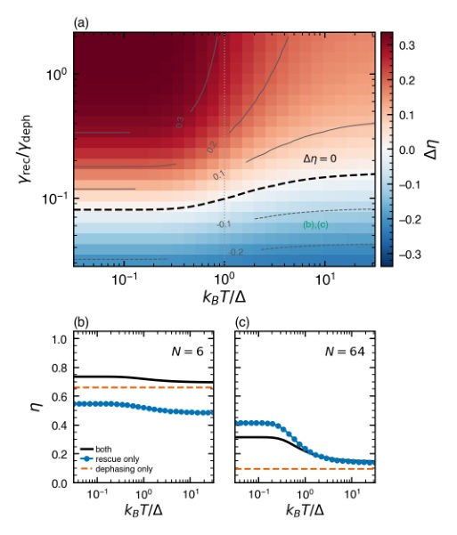
<figcaption class="paper-figure-caption"><b>Fig 3.</b> FIG. 3. Rescue–dephasing competition at finite temperature. (a) Efficiency difference ∆η = ηrec −ηdeph vs kBT/∆and rate ratio γrec/γdeph for N = 6. The absorption rate γabs = e−∆/kBT γrec refills the dark manifold at finite T, degrading the unidirectional rescue. The crossover at kBT/∆∼1 is a clean detailed-balance signature, and shifts the ∆η = 0 boundary (black dashed) only weakly, from γrec/γdeph ≈0.08 to ≈0.16. (b),(c) Efficiency vs. temperature at γrec = 0.05 γdeph for (b) N = 6 and (c) N = 64: both channels active (black), rescue only (γdeph = 0, blue), and dephasing only (γrec = 0, orange dashed; T-independent). Raising N maps the temperature dependence of rescue channel on total...</figcaption>
</figure>
</div>

<p><strong>Summary.</strong> The paper introduces a novel 'unidirectional rescue' mechanism for quantum energy transport in coupled emitter arrays trapped in dark states. This process utilizes non-Condon exciton-phonon coupling to create an irreversible escape route into the radiative channel. The key finding is that this rescue rate maintains near-unity efficiency independent of system size, significantly outperforming standard dephasing mechanisms.</p>
<p><strong>Why it may be interesting.</strong> This work directly addresses open quantum systems dynamics in cavity QED, providing a concrete, engineered pathway to enhance energy transfer that circumvents fundamental limitations imposed by system geometry (size scaling).</p>
<details>
<summary>Detailed structure</summary>
<p><strong>Main problem.</strong> The primary challenge addressed is overcoming energy trapping within optically dark states that form due to strong light-matter coupling in cavity arrays.</p>
<p><strong>Main result.</strong> The authors demonstrate a unidirectional 'rescue' mechanism, mediated by non-Condon exciton-phonon coupling, which efficiently channels population out of the dark manifold into the radiative channel regardless of system size.</p>
<p><strong>Method.</strong> The dynamics are modeled using a Lindblad master equation approach, comparing the rescue rate against standard dephasing mechanisms through detailed numerical simulations and theoretical analysis.</p>
<p><strong>Model / system.</strong> The system is an array of coupled two-level emitters interacting with a single optical cavity (polaritonic system) and coupled to an exciton-phonon bath. The dynamics are governed by the Lindblad equation incorporating multiple dissipation channels.</p>
<p><strong>Key observables.</strong> Transport efficiency ($\eta$), dark state decay rate, transient bright peak signature in photon emission, and size scaling of efficiency ($\eta$ vs $N$).</p>
<p><strong>Important parameters / regimes.</strong> System size ($N$), temperature ($k_B T/\Delta$), coupling strengths (e.g., cavity-drain rates), and the ratio of rescue to dephasing rates.</p>
<p><strong>Assumptions / limitations.</strong> The analysis relies on linear order system-bath coupling and the rotating-wave approximation, though unidirectionality is robustly shown even beyond these limits at T=0.</p>
<p><strong>Figures summary.</strong> Figures compare dynamics under pure rescue versus pure dephasing, showing size-independent high efficiency for rescue while dephasing shows a size-dependent deficit. They also map the competition between rates as a function of temperature and rate ratios.</p>
<p><strong>Paper structure.</strong> The paper establishes the problem (dark state trapping), introduces the unidirectional rescue mechanism via non-Condon coupling, provides quantitative evidence through size-scaling tests comparing rescue vs. dephasing efficiency, and concludes by discussing implications for quantum control.</p>
</details>
<details>
<summary>Abstract</summary>
<p>Strong light-matter coupling in optical microcavities can transport energy ballistically across an emitter array, but the same coupling buries most of the excitation in a manifold of dark states that grows with system size and traps energy outside the transport channel. We show that the off-diagonal (non-Condon) part of the exciton-phonon coupling opens a one-way escape route from this trap, driving population irreversibly from dark states into the radiative channel. This rate is fixed by a photonic-weight conservation law rather than by dark-bright overlap which evacuates the dark manifold at a rate independent of system size. The mechanism contributes to transport with near-complete efficiency with four signatures being single exponential dark state decay, a size scaling efficiency gap, distinct temperature behavior, and a resonance in the escape rate at vibrational bath modes. Beyond polariton transport, it recasts dark states from a parasitic loss channel into an engineered dissipative resource, with implications for light harvesting and dissipation based quantum control.</p>
</details>
<p><sub><a href="#top">↑ back to top</a></sub></p>

<p><a id="paper-2608.05503"></a></p>
<h3 id="generating-two-mechanical-mode-entangled-cat-states-and-steady-state-entanglement-in-cavity-optomechanics-in-the-presence-of-dissipation"><a href="http://arxiv.org/abs/2608.05503v1">Generating two-mechanical mode entangled cat states, and steady-state entanglement, in cavity optomechanics in the presence of dissipation</a></h3>
<p><strong>Authors:</strong> Sanket Das, Jason Twamley<br>
<strong>Type:</strong> theory · <strong>Category:</strong> other · <strong>PDF:</strong> <a href="https://arxiv.org/pdf/2608.05503v1">https://arxiv.org/pdf/2608.05503v1</a><br>
<strong>Analysis basis:</strong> full PDF text, analyzed in chunks
<strong>Topic relevance:</strong> 🔥 <code>correlated / nonlocal dissipation</code> <strong>4/5</strong> · 🔥 <code>entanglement &amp; information structure</code> <strong>4/5</strong> · 🔥 <code>methods for driven-dissipative</code> <strong>4/5</strong> · <code>analog quantum simulation</code> <strong>3/5</strong> · <code>correlated cavity matter</code> <strong>3/5</strong> · <code>driven-dissipative phase transition</code> <strong>3/5</strong> · <code>non-equilibrium dynamics</code> <strong>2/5</strong> · <code>non-equilibrium universality</code> <strong>2/5</strong> · <code>Keldysh / 2PI / non-Gaussian methods</code> <strong>1/5</strong> · <code>Tavis-Cummings &amp; cavity-many-emitter</code> <strong>1/5</strong></p>
<div class="figure-strip-hint">↔ Scroll figures horizontally</div>
<div class="paper-figures-scroll">
<figure class="paper-figure-card">
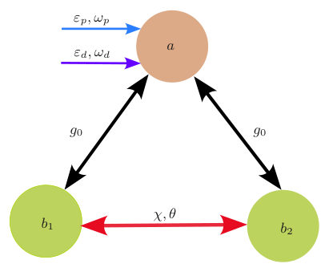
<figcaption class="paper-figure-caption"><b>Fig 1.</b> FIG. 1. A schematic diagram of a cavity optomechanical sys- tem consists of a single cavity and two mechanical modes. The radiation pressure and phonon-hopping interactions are shown in black and red arrows, respectively. Single photon optomechanical coupling is g0, and the phonon-phonon inter- action is characterized by χ and θ. Cavity is driven by the pump field of amplitude and phase εp and ωp. Along with that, a coherent drive of amplitude εd and frequency ωd is also applied to the cavity.</figcaption>
</figure>
<figure class="paper-figure-card">
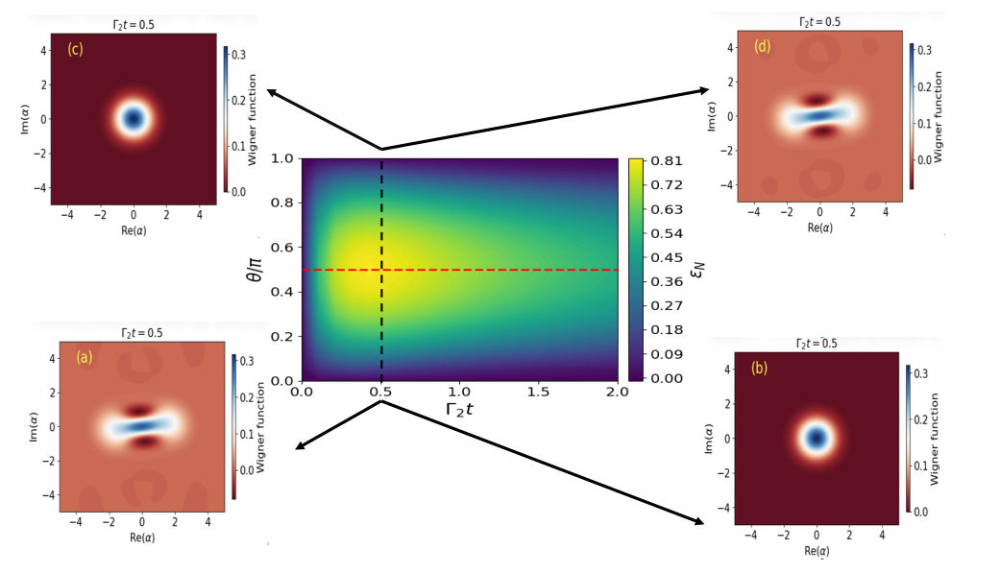
<figcaption class="paper-figure-caption"><b>Fig 2.</b> FIG. 2. The central panel shows evolution of bipartite entanglement between the collective modes. The panels a(b) and c(d) depict the Wigner function of the bright(dark) mode when θ = 0 and π/2 at normalized time Γ2t = 0.5, respectively. We consider the degenerate mechanical modes with resonance frequency ωm/2π = 15 MHz and decay rate Γ/2π = 15 Hz, respectively. Thermal occupancy of each mechanical mode nb = 0. The exchange interaction between the two mechanical modes is characterized by the interaction amplitude χ/Γ2 = 10−2. The other parameters are ∆= −2ωm, γa/2π = 100 kHz, g0/2π = 1 MHz, ¯α = 0.02 and β = 1.6.</figcaption>
</figure>
<figure class="paper-figure-card">
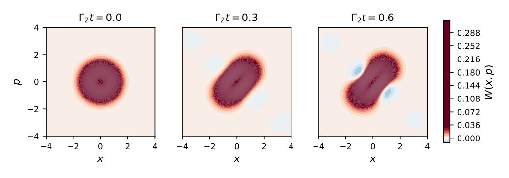
<figcaption class="paper-figure-caption"><b>Fig 3.</b> FIG. 3. Temporal evolution of the conditional state of the bright mode. The phonon hopping interaction strength is charac- terized by χ/Γ2 = 0.01 and ϕ = π/2. All the other parameters are same as in Fig. 2.</figcaption>
</figure>
<figure class="paper-figure-card">
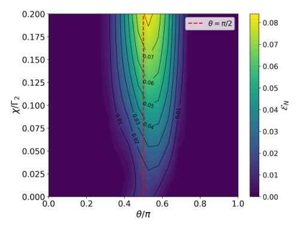
<figcaption class="paper-figure-caption"><b>Fig 4.</b> FIG. 4. Steady-state bipartite entanglement between the col- lective modes as a function of χ and θ, when thermal excita- tion of each mechanical mode is 0.5. Red dashed line suggest θ = π/2. All the other parameters are the same as Fig. 2.</figcaption>
</figure>
<figure class="paper-figure-card">
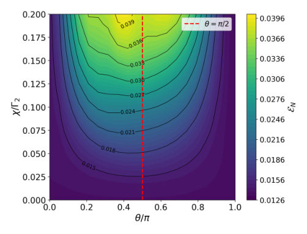
<figcaption class="paper-figure-caption"><b>Fig 5.</b> FIG. 5. Steady-state bipartite entanglement between the bare mechanical modes as a function of χ and θ, when thermal excitation of each mechanical mode is 0.5. Red dashed line suggest θ = π/2. All the other parameters are the same as Fig. 2.</figcaption>
</figure>
</div>

<p><strong>Summary.</strong> The paper demonstrates a method to generate highly entangled two-mode Schrödinger cat states in cavity optomechanics by carefully controlling the system's dissipation. By tuning the phase of an interaction term ($  heta$), researchers can maximize bipartite entanglement between mechanical modes, proving that engineered environmental coupling is a powerful tool for quantum state preparation.</p>
<p><strong>Why it may be interesting.</strong> This work exemplifies advanced reservoir engineering by showing how controlled dissipation can stabilize non-Gaussian entangled states (cat states) in mechanical oscillators, a key area for quantum sensing and computation using macroscopic quantum systems.</p>
<details>
<summary>Detailed structure</summary>
<p><strong>Main problem.</strong> The study investigates generating two-mechanical mode entangled Schrödinger cat states (SCS) and characterizing steady-state entanglement in a cavity optomechanical system subject to environmental dissipation.</p>
<p><strong>Main result.</strong> The phase of the phonon-hopping interaction ($ heta$) can be tuned to control bipartite entanglement, achieving maximum entanglement at intermediate phases like $ heta=\pi/2$, even when considering thermal excitations.</p>
<p><strong>Method.</strong> The analysis involves deriving an effective master equation for the mechanical modes via adiabatic elimination of the cavity field and quantifying entanglement using logarithmic negativity ($\mathcal{E}_N$).</p>
<p><strong>Model / system.</strong> The system is a hybrid cavity optomechanical platform with one cavity mode coupled to two spectrally identical, interacting mechanical oscillators. The dynamics are governed by a master equation incorporating damping from both the cavity and mechanical baths.</p>
<p><strong>Key observables.</strong> Bipartite entanglement (quantified by logarithmic negativity $\mathcal{E}_N$), Schrödinger cat state formation, and steady-state coherence ($c(t)$).</p>
<p><strong>Important parameters / regimes.</strong> The phase of the phonon-hopping interaction ($  heta$), mechanical damping rates ($\Gamma$), cavity decay rate ($\gamma_a$), and coupling strengths ($g_0$).</p>
<p><strong>Assumptions / limitations.</strong> Adiabatic elimination of the fast-decaying cavity mode is used, and some analytical approximations rely on weak phonon exchange interactions ($\chi \ll \Gamma_2$).</p>
<p><strong>Figures summary.</strong> Figures illustrate the system components (Fig. 1), show bipartite entanglement vs. $   heta$ (maximized at $\pi/2$), and demonstrate temporal evolution of fidelity $F(t)$ confirming analytical accuracy limits.</p>
<p><strong>Paper structure.</strong> The paper models the full Hamiltonian, derives a reduced master equation for mechanical modes using adiabatic elimination, analyzes the system in collective eigenmode bases ($    ext{D}\pm$), and finally calculates entanglement measures to show phase-dependent control over quantum states.</p>
</details>
<details>
<summary>Abstract</summary>
<p>We investigate a dissipation-engineering approach to produce a phase-dependent collective-mode Schrödinger cat state involving two modes. Our model features a single cavity mode that interacts with two spectrally identical mechanical oscillators. Both oscillators are coupled through a phase-dependent hopping interaction. We demonstrate that by adjusting the phase of the phonon-hopping interaction, one can control the bipartite entanglement of the phase-dependent two-mode cat state during its generation. Additionally, our study reveals that phonon interactions act as a tunable parameter, enabling the manipulation of steady-state entanglement between the bare mechanical modes, even in the presence of environmental effects and thermal excitations. Our scheme provides a feasible approach for the phase-dependent multi mode non-Gaussian states preparation.</p>
</details>
<p><sub><a href="#top">↑ back to top</a></sub></p>

<p><a id="paper-2608.06303"></a></p>
<h3 id="impact-of-nonlinearities-on-local-kinetic-and-thermokinetic-uncertainty-relations-in-bosonic-transport"><a href="http://arxiv.org/abs/2608.06303v1">Impact of Nonlinearities on Local Kinetic and Thermokinetic Uncertainty Relations in Bosonic Transport</a></h3>
<p><strong>Authors:</strong> Didrik Palmqvist, Luca Magazzù, Milena Grifoni, Janine Splettstoesser<br>
<strong>Type:</strong> theory · <strong>Category:</strong> statistical mechanics · <strong>PDF:</strong> <a href="https://arxiv.org/pdf/2608.06303v1">https://arxiv.org/pdf/2608.06303v1</a><br>
<strong>Analysis basis:</strong> full PDF text, analyzed in chunks
<strong>Topic relevance:</strong> 🔥 <code>methods for driven-dissipative</code> <strong>4/5</strong> · 🔥 <code>non-equilibrium dynamics</code> <strong>4/5</strong> · <code>Keldysh / 2PI / non-Gaussian methods</code> <strong>3/5</strong> · <code>correlated / nonlocal dissipation</code> <strong>3/5</strong> · <code>driven-dissipative phase transition</code> <strong>3/5</strong> · <code>entanglement &amp; information structure</code> <strong>2/5</strong> · <code>non-equilibrium universality</code> <strong>2/5</strong> · <code>quantum measurements</code> <strong>2/5</strong> · <code>Kondo &amp; dissipative impurity</code> <strong>1/5</strong> · <code>analog quantum simulation</code> <strong>1/5</strong> · <code>measurement-induced transitions</code> <strong>1/5</strong> · <code>scars &amp; prethermalization</code> <strong>1/5</strong></p>
<div class="figure-strip-hint">↔ Scroll figures horizontally</div>
<div class="paper-figures-scroll">
<figure class="paper-figure-card">
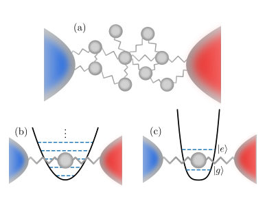
<figcaption class="paper-figure-caption"><b>Fig 1.</b> Figure 1. (a) Sketch of a network of harmonic oscillators cou- pled to two bosonic reservoirs (or, equivalently, baths), where colors indicate possibly different temperatures. (b) Limit of a single harmonic oscillator connected to two reservoirs. (c) In the presence of strong nonlinearities, the central region is modeled by a two-level system—the nonequilibrium spin- boson model (NESB).</figcaption>
</figure>
<figure class="paper-figure-card">
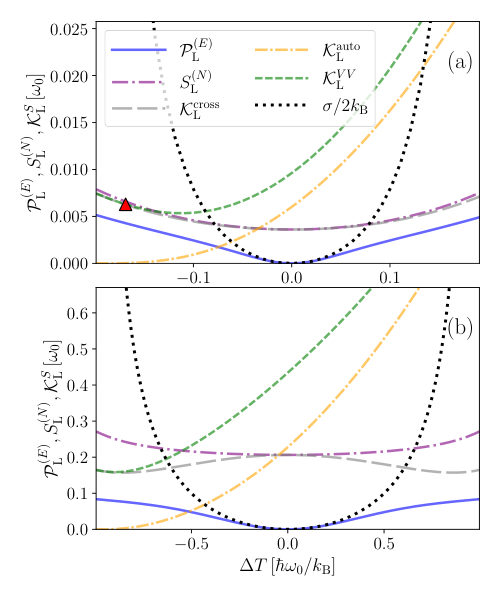
<figcaption class="paper-figure-caption"><b>Fig 2.</b> Figure 2. Harmonic-oscillator system: Precision in energy current P(E) L , the current noise S(N) L , contributions to the correlator-based activity KV V L = Kcross L + Kauto L , and entropy production σ as functions of temperature bias ∆T. In (a) the average temperature is ¯T = 0.1ℏω0/kB and in (b) ¯T = ℏω0/kB. In both panels, the coupling strengths are set to gα = ω0 and the cutoff frequency ωc = 10ω0. The red triangle indicates one of the points appearing in Fig. 4.</figcaption>
</figure>
<figure class="paper-figure-card">
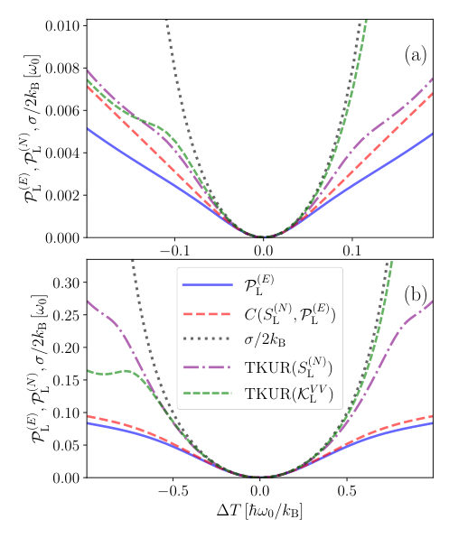
<figcaption class="paper-figure-caption"><b>Fig 3.</b> Figure 3. Harmonic-oscillator system: Precision in en- ergy current P(E) L , TKURs using particle current noise and the correlator-based definition of activity to estimate single- particle transfer rates and entropy production σ as functions of temperature bias ∆T = TL −TR. In addition, the im- proved inference-bound on entropy production of (5) is shown. In panel (a) the average temperature ¯T = (TL + TR)/2 = 0.1ℏω0/kB and in panel (b) ¯T = ℏω0/kB. In both panels, the coupling strengths are set to gα = ω0 and the cutoff frequency ωc = 10ω0.</figcaption>
</figure>
<figure class="paper-figure-card">
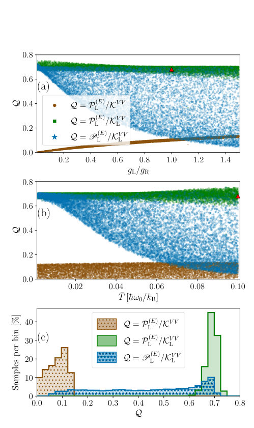
<figcaption class="paper-figure-caption"><b>Fig 4.</b> Figure 4. Harmonic-oscillator system: Saturation of local KUR (Eq. (37a) green squares and histogram), S-KUR ((12) blue stars and histogram) and classical KUR (Eq. (37b) brown dots and histogram). We show the ratios between precision and bound as function of coupling asymmetry in panel (a) and as function of the average temperature in (b) where the remaining parameters are uniformly sampled (10000 points) with kB ¯T/(ℏω0) ∈[10−3, 10−1], ∆T/ ¯T ∈[−0.95, −0.7] and gL/gR ∈[10−3, 1.5] and ωc = 10ω0. Panel (c) shows the statistics of values obtained for the ratio between precision and bound. The red triangle indicates one of the points ap- pearing in Fig. 2.</figcaption>
</figure>
<figure class="paper-figure-card">
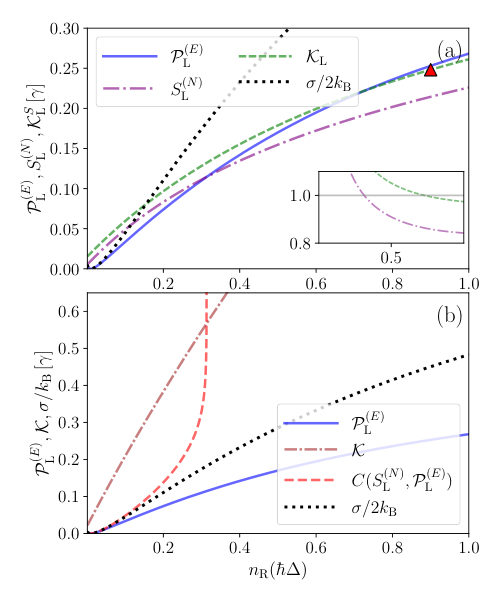
<figcaption class="paper-figure-caption"><b>Fig 5.</b> Figure 5. NESB: Energy-current precision P(E) L , local activ- ity KL, particle current noise S(N) L , and (for reference) en- tropy production σ. Coupling strengths to the reservoirs are symmetric γL = γR = γ. Panel (a): right reservoir aver- age occupation nR(∆) is varied while the average occupation of the left reservoir is kept fixed at nL(∆) = 0.01. Panel (b): left reservoir average occupation nL(∆) is varied while the average occupation of the right reservoir is kept fixed at nR(∆) = 1. The insets display violations of local KUR and KUR-like bounds via the ratios KL/P(E) L (dashed green line) and S(N) L /P(E) L (dash-dotted purple line). The red triangle indicates a point appearing in...</figcaption>
</figure>
</div>

<p><strong>Summary.</strong> This paper theoretically examines how interactions and nonlinearities impact fundamental uncertainty relations that bound the precision of measurements in bosonic quantum transport. By analyzing model systems like the spin-boson model, the authors show that while local bounds are tight for linear systems, nonlinearity can significantly alter or invalidate these established predictive limits.</p>
<p><strong>Why it may be interesting.</strong> This is highly relevant as it bridges non-equilibrium thermodynamics (entropy production) with quantum transport theory, providing concrete predictions about measurement limitations in interacting nanoscale devices.</p>
<details>
<summary>Detailed structure</summary>
<p><strong>Main problem.</strong> The study investigates how nonlinearities (interactions) affect the validity and predictive power of local kinetic and thermokinetic uncertainty relations governing bosonic transport.</p>
<p><strong>Main result.</strong> The paper demonstrates that while linear systems allow for tight, locally defined precision bounds, these bounds are impacted or potentially broken when strong nonlinear interactions are present in the steady-state regime.</p>
<p><strong>Method.</strong> The analysis employs theoretical tools including the Gorini–Kossakowski–Sudarshan–Lindblad (GKSL) master equation, Full Counting Statistics (FCS), and derivations of various activity measures to establish bounds.</p>
<p><strong>Model / system.</strong> The work analyzes bosonic transport in two specific models: a harmonic oscillator network and the intrinsically nonlinear spin-boson model (NESB). The general framework involves an open quantum system coupled to Markovian baths.</p>
<p><strong>Key observables.</strong> Precision $P(X) := (I(X))^2 / S(X)$, entropy production ($\sigma$), local/global activity measures, and current noise ($S(N)$).</p>
<p><strong>Important parameters / regimes.</strong> The analysis focuses on the transition from linear to nonlinear regimes, and the dependence of bounds on the specific definition of 'activity'.</p>
<p><strong>Assumptions / limitations.</strong> Approximations used include Born, Markov, and secular approximations when deriving correlator-based activity definitions.</p>
<p><strong>Figures summary.</strong> Figure 1 sketches illustrate the physical setups: a harmonic oscillator network coupled to two reservoirs, the single oscillator limit, and the NESB model under strong nonlinearities.</p>
<p><strong>Paper structure.</strong> The paper first reviews the theoretical framework of uncertainty relations in bosonic transport. It then develops multiple definitions for dynamical activity using Green's functions and correlators, showing their mathematical equivalence under approximations. Finally, it applies these tools to analyze how nonlinearity affects the derived local precision bounds in specific model systems.</p>
</details>
<details>
<summary>Abstract</summary>
<p>The precision of transport observables can be bounded by the entropy production and the activity of the transport process via kinetic and thermokinetic uncertainty relations. In linear bosonic systems, such uncertainty relations can provide tight bounds when the activity is replaced by a local activity of the measurement contact of interest---even in the strong-coupling regime. How much nonlinearities (or interactions) impact the validity and predictiveness of these local bounds and how much this impact depends on the concrete definition of activity are open questions that we address for two experimentally relevant model systems, a harmonic oscillator network and the intrinsically nonlinear spin-boson model. We thereby provide experimentally testable predictions on how nonlinearities impact or even break local kinetic and thermokinetic precision bounds.</p>
</details>
<p><sub><a href="#top">↑ back to top</a></sub></p>

<p><a id="paper-2608.06189"></a></p>
<h3 id="quantum-transport-in-a-non-hermitian-1d-synthetic-lattice-from-quantum-zeno-reflection-to-near-perfect-absorption"><a href="http://arxiv.org/abs/2608.06189v1">Quantum transport in a non-Hermitian 1D synthetic lattice: from quantum Zeno reflection to near-perfect absorption</a></h3>
<p><strong>Authors:</strong> Emmanuel. D. Mercado-Gutiérrez, W. Xu, E. Gvozdiovas, A. M. Piñeiro, Javier Argüello-Luengo, W. D. Phillips, Q. Zhou, I. B. Spielman<br>
<strong>Type:</strong> both · <strong>Category:</strong> quantum gases · <strong>PDF:</strong> <a href="https://arxiv.org/pdf/2608.06189v1">https://arxiv.org/pdf/2608.06189v1</a><br>
<strong>Analysis basis:</strong> full PDF text, analyzed in chunks
<strong>Topic relevance:</strong> 🔥 <code>analog quantum simulation</code> <strong>4/5</strong> · 🔥 <code>non-equilibrium dynamics</code> <strong>4/5</strong> · <code>correlated / nonlocal dissipation</code> <strong>3/5</strong> · <code>driven-dissipative phase transition</code> <strong>3/5</strong> · <code>methods for driven-dissipative</code> <strong>3/5</strong> · <code>Kondo &amp; dissipative impurity</code> <strong>2/5</strong> · <code>non-equilibrium universality</code> <strong>2/5</strong> · <code>Frenkel-Kontorova</code> <strong>1/5</strong> · <code>Keldysh / 2PI / non-Gaussian methods</code> <strong>1/5</strong> · <code>entanglement &amp; information structure</code> <strong>1/5</strong> · <code>quantum measurements</code> <strong>1/5</strong></p>
<div class="figure-strip-hint">↔ Scroll figures horizontally</div>
<div class="paper-figures-scroll">
<figure class="paper-figure-card">
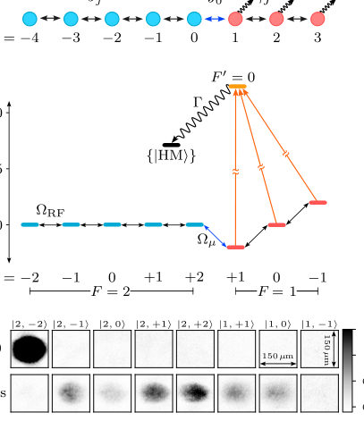
<figcaption class="paper-figure-caption"><b>Fig 1.</b> FIG. 1. Synthetic lattice. (a) Finite chain with non- dissipative (blue, j ≤0) and dissipative (red, j &gt; 0) sub- chains. (b) Experimental realization with the F = 1 and F = 2 manifolds of 87Rb. Intra- and inter-manifold cou- plings are provided by RF and microwave magnetic fields with strengths ΩRF and Ωµ, respectively. The F = 1 ground states are optically coupled to the F ′ = 0 excited state; this decays, with rate Γ, to a range of outgoing momentum states {|HM⟩}. The potential landscape Vj results from rotating-frame detun- ings. (c) Column density associated with each state, measured after evolution times of t = 0 (top) and 650 µs (bottom), with ΩRF = 2π × 1.968(4) kHz, Ωµ =...</figcaption>
</figure>
<figure class="paper-figure-card">
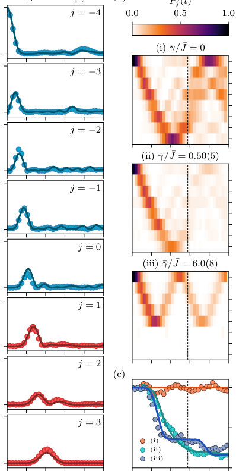
<figcaption class="paper-figure-caption"><b>Fig 2.</b> FIG. 2. Dynamics. (a) Occupation probabilities Pj(t) for dissipative (red) and lossless (blue) sites with ¯γ/ ¯J = 0.50(5), J0/ ¯J = 1.083(2) and ¯J = 2π × 1.929(4) kHz. Circles (solid curves) denote experimental data (simulations). (b) Aggregated experimental data for three regimes: (i) explic- itly lossless [¯γ/ ¯J = 0], (ii) near-optimal absorption [¯γ/ ¯J = 0.50(5), identical to (a)], and (iii) quantum Zeno reflection [¯γ/ ¯J = 6.0(8)]. (c) Total probability PT(t) for each regime in (b). The black dashed line at t ¯J = 7.2 is the dimensionless time selected to measure the single-pass absorption A.</figcaption>
</figure>
<figure class="paper-figure-card">
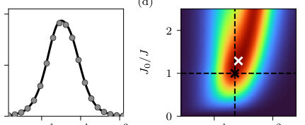
<figcaption class="paper-figure-caption"><b>Fig 3.</b> FIG. 4. Extended lattice model. (a) Momentum-resolved absorption A(k) for γ/J = 1.14 (black) and γ/J = 50 (red), with J0/J = 1. (b) Numerical (circles) and analytical (curve) results for A∞as a function of J0/J at γ/J = 1.14; the inset shows the finite-chain A approaching A∞with increasing L. (c) A∞as a function of γ/J at J0/J = 1. (d) A∞as a function of γ/J and J0/J using the same color scale as in Fig. 3(d) with dashed lines indicating the cross sections in (c) and (d). The white cross marks the global maximum.</figcaption>
</figure>
<figure class="paper-figure-card">
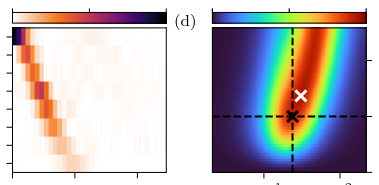
<figcaption class="paper-figure-caption"><b>Fig 4.</b> FIG. 3. Near-perfect absorption. (a) Absorption A as a function of ¯γ/ ¯J with J0/ ¯J = 1.083(2). (b) Absorption as a function of J0/ ¯J at ¯γ = ¯γmax = 1.34(5) ¯J. (c) Wavepacket evolution at ¯γmax and J0,max = 1.32(7) ¯J found in (a) and (b). (d) Computed absorption as a function of ¯γ/ ¯J and J0/ ¯J with dashed lines indicating the cuts in (a) and (b). The white cross marks the global maximum.</figcaption>
</figure>
</div>

<p><strong>Summary.</strong> The authors demonstrate the control of quantum transport by engineering dissipation in a synthetic lattice built from $^{87}	ext{Rb}$ BEC atoms. By tuning the loss rate relative to tunneling, they achieve near-perfect absorption at an optimum balance point, contrasting this with ballistic or Zeno reflection regimes. This establishes controlled dissipation as a powerful resource for tailoring quantum dynamics.</p>
<p><strong>Why it may be interesting.</strong> This work provides a highly controllable platform (BECs) to engineer open quantum systems, making it directly relevant to research in open quantum dynamics, engineered dissipation, and non-Hermitian physics.</p>
<details>
<summary>Detailed structure</summary>
<p><strong>Main problem.</strong> The study experimentally explores wavepacket absorption when impinging on a dissipative region within an engineered quantum system, aiming to control quantum transport by tuning dissipation.</p>
<p><strong>Main result.</strong> Optimal energy absorption is achieved by carefully matching the tunneling strength and the dissipation rate, demonstrating a controllable transition between ballistic propagation, near-perfect absorption, and Zeno reflection.</p>
<p><strong>Method.</strong> The research combines experimental measurements on an atomic BEC with numerical simulations using non-Hermitian tight-binding Hamiltonians to model wavepacket dynamics.</p>
<p><strong>Model / system.</strong> The system is a 1D non-Hermitian synthetic lattice realized using the hyperfine manifold of a trapped $^{87}	ext{Rb}$ Bose-Einstein condensate. The lattice features an abrupt interface between dissipative and non-dissipative subchains.</p>
<p><strong>Key observables.</strong> Absorption efficiency ($A$), occupation probabilities $P_j(t)$, and total probability $P_T(t)$.</p>
<p><strong>Important parameters / regimes.</strong> Dissipation rate ($ar{\gamma}$), inter-chain tunneling strength ($J_0$), and the ratio $ar{\gamma}/ar{J}$.</p>
<p><strong>Assumptions / limitations.</strong> The analysis relies on modeling the system with a non-Hermitian Hamiltonian, comparing measurements against numerical simulations.</p>
<p><strong>Figures summary.</strong> Figures illustrate wavepacket occupation probabilities in three regimes (lossless, optimal absorption, Zeno reflection) and show parameter scans confirming that maximum absorption requires matching tunneling and dissipation.</p>
<p><strong>Paper structure.</strong> The paper progresses from defining the physical system and Hamiltonian to presenting experimental observations across different dissipation regimes, followed by theoretical analysis using idealized semi-infinite models for confirmation.</p>
</details>
<details>
<summary>Abstract</summary>
<p>We experimentally explore the absorption of a propagating wavepacket impinging upon a dissipative region in an engineered quantum system. We employ a 1D non-Hermitian synthetic lattice with an abrupt interface between dissipative and non-dissipative subchains, using the states of the electronic ground-state hyperfine manifold in a $^{87}$Rb Bose-Einstein condensate as sites. By tuning the dissipation rate, we observe a progression from ballistic propagation, to near-perfect absorption, to quantum Zeno reflection. Guided by numerical simulations, we identify that optimal absorption occurs when tunneling and dissipation are properly matched, and find qualitative agreement with an idealized semi-infinite model across all dissipation regimes. Our results establish synthetic lattices as a versatile Quantum simulation platform for dissipation-engineered quantum transport and highlight controlled dissipation as a resource for tailoring quantum dynamics.</p>
</details>
<p><sub><a href="#top">↑ back to top</a></sub></p>

<p><a id="paper-2608.06319"></a></p>
<h3 id="the-quantum-mechanics-of-rare-events-from-quantum-walks-to-stochastic-inflation"><a href="http://arxiv.org/abs/2608.06319v1">The Quantum Mechanics of Rare Events: From Quantum Walks to Stochastic Inflation</a></h3>
<p><strong>Authors:</strong> Daniel Green, Kshitij Gupta, Akhil Premkumar<br>
<strong>Type:</strong> theory · <strong>Category:</strong> statistical mechanics · <strong>PDF:</strong> <a href="https://arxiv.org/pdf/2608.06319v1">https://arxiv.org/pdf/2608.06319v1</a><br>
<strong>Analysis basis:</strong> full PDF text, analyzed in chunks
<strong>Topic relevance:</strong> 🔥 <code>measurement-induced transitions</code> <strong>4/5</strong> · <code>Keldysh / 2PI / non-Gaussian methods</code> <strong>3/5</strong> · <code>driven-dissipative phase transition</code> <strong>3/5</strong> · <code>correlated / nonlocal dissipation</code> <strong>2/5</strong> · <code>entanglement &amp; information structure</code> <strong>2/5</strong> · <code>methods for driven-dissipative</code> <strong>2/5</strong> · <code>non-equilibrium dynamics</code> <strong>2/5</strong> · <code>non-equilibrium universality</code> <strong>2/5</strong> · <code>quantum measurements</code> <strong>2/5</strong> · <code>Kondo &amp; dissipative impurity</code> <strong>1/5</strong> · <code>analog quantum simulation</code> <strong>1/5</strong> · <code>correlated cavity matter</code> <strong>1/5</strong></p>
<div class="figure-strip-hint">↔ Scroll figures horizontally</div>
<div class="paper-figures-scroll">
<figure class="paper-figure-card">
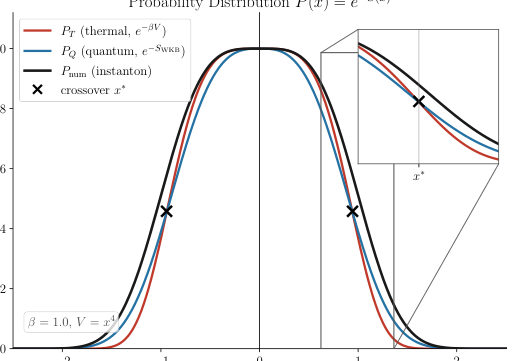
<figcaption class="paper-figure-caption"><b>Fig 1.</b> Figure 1: Illustration of the relative contributions of classical random (thermal, red) and quantum mechanical (WKB, blue) contributions to the full probability distribution (numerical instanton, black) at large distances calculated. The calculation for all three curves are explained in Section 2.</figcaption>
</figure>
<figure class="paper-figure-card">
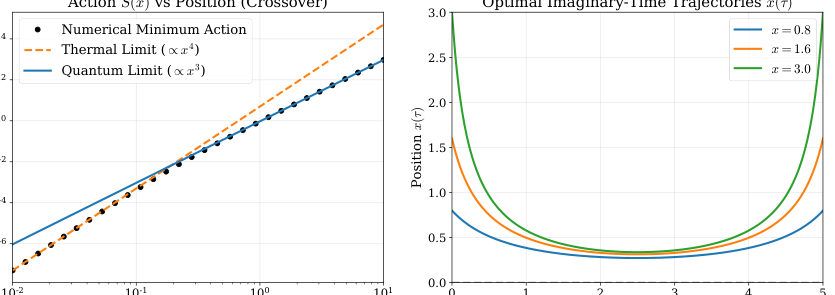
<figcaption class="paper-figure-caption"><b>Fig 2.</b> Figure 2: Left: Numerically computed action for the quantum thermal instanton for various values of x (points), compared to the thermal and quantum scalings, S ∝x4 and x3 respectively. Right: The solutions for the instantons for different boundary conditions.</figcaption>
</figure>
<figure class="paper-figure-card">
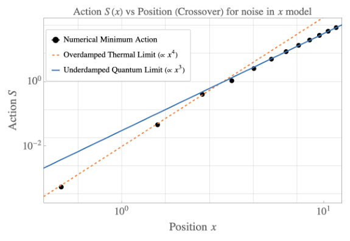
<figcaption class="paper-figure-caption"><b>Fig 3.</b> Figure 3: Numerically computed action for the quantum noise in x instanton for various values of x (points), compared to the overdamped classical and free quantum scalings, S ∝x4 and x3</figcaption>
</figure>
<figure class="paper-figure-card">
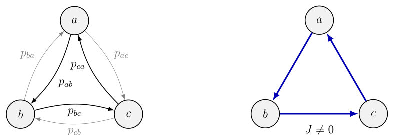
<figcaption class="paper-figure-caption"><b>Fig 4.</b> Figure 4: A three-site lattice sustaining a nonequilibrium steady state (NESS). (Left) Individual transition rates to/from each site. Each bond has a dominant (thick) and a reverse (thin, gray) rate, with πapab ̸= πbpba and cyclically for (b, c) and (c, a). (Right) The resulting net circulation. Since πa, πb, πc are constant in time, this current is stationary: mass leaving a is exactly replen- ished via c →a, with no accumulation anywhere. This persistent circulation, despite a perfectly stationary density, is the source of housekeeping entropy production.</figcaption>
</figure>
<figure class="paper-figure-card">
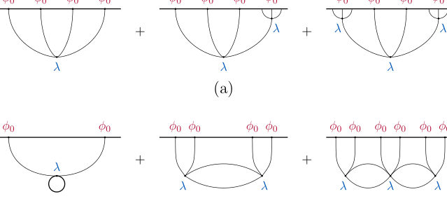
<figcaption class="paper-figure-caption"><b>Fig 5.</b> Figure 5: Contributions to the wavefunction from (a) tree level and (b) loop-level Witten dia- grams. The tree level diagrams dominated when ϕ2 0λ ≫1 as the loop diagrams are suppressed by additional powers of λ for the same order in ϕ0. Figure adapted from [111].</figcaption>
</figure>
</div>

<p><strong>Summary.</strong> This paper develops the theory of large deviations for quantum systems, which is crucial for understanding rare events in physics. It demonstrates that these fluctuations can be characterized by minimizing measurement-induced relative entropy across various models. The work applies this framework successfully to both condensed matter analogs (anharmonic oscillators) and fundamental cosmology problems like stochastic inflation.</p>
<p><strong>Why it may be interesting.</strong> It bridges foundational statistical mechanics (large deviations) with modern open quantum systems dynamics and high-energy astrophysics (cosmology), providing tools applicable to non-equilibrium quantum processes.</p>
<details>
<summary>Detailed structure</summary>
<p><strong>Main problem.</strong> The primary goal is to develop a practical theory of large deviations for quantum systems, addressing a major gap in understanding rare fluctuations relevant to statistical physics and cosmology.</p>
<p><strong>Main result.</strong> The paper shows that dominant rare quantum fluctuations minimize the measurement-induced relative entropy, providing a thermodynamic description applicable from quantum walks to cosmological field evolution.</p>
<p><strong>Method.</strong> The authors analyze open quantum systems using techniques involving quantum fidelity maximization and minimizing measurement-induced relative entropy, extending classical large deviation principles.</p>
<p><strong>Model / system.</strong> Models include the anharmonic oscillator coupled to a bath, general quantum random walks, and long wavelength scalar fields evolving on a fixed de Sitter background in cosmology.</p>
<p><strong>Key observables.</strong> Measurement-induced relative entropy, Quantum Fidelity ($\mathcal{F}$), rate function $I(\alpha)$, and the breakdown of KMS symmetry.</p>
<p><strong>Important parameters / regimes.</strong> Temperature (thermal vs. quantum regimes), coupling constants ($\lambda$), and cosmological scale factors defining de Sitter space.</p>
<p><strong>Assumptions / limitations.</strong> The analysis often assumes Gaussian noise for deriving diffusion equations, and it builds upon established large deviation theory from classical statistical mechanics.</p>
<p><strong>Figures summary.</strong> Figure 1 illustrates the crossover between classical random (thermal), quantum mechanical (WKB), and numerical instanton contributions to the probability distribution $P(x)$ at large distances.</p>
<p><strong>Paper structure.</strong> The paper progresses by first analyzing the anharmonic oscillator's transition from thermal to quantum behavior, then generalizing this using relative entropy minimization for abstract quantum walks, and finally applying these concepts to random walks arising in stochastic inflation/de Sitter cosmology.</p>
</details>
<details>
<summary>Abstract</summary>
<p>Rare fluctuations in physical systems depend on the detailed microphysics responsible for the fluctuations. In classical statistical systems, the large deviation principle has elucidated the role of semi-classics in describing this regime, and has simultaneously provided a the mathematical foundation of statistical mechanics. Large deviation theory for quantum system is considerably less developed. As all physical systems are fundamentally quantum mechanical, this leaves a major gap in our understanding of rare fluctuations relevant to statistical physics, cosmology, and more. In this paper, we develop the practical aspects of the theory of large deviations relevant for calculating rare events in physical systems from quantum walks to cosmology. We first analyze the case of the anharmonic oscillator coupled to a bath, showing explicitly how the system evolves from dominantly statistical (e.g. thermal) to quantum fluctuations. We then generalize these results, showing that the dominant rare fluctuations minimize the measurement-induced relative entropy. This perspective provides a thermodynamic description of a wide range of open quantum systems. We apply these results to random walks that arise in cosmology through stochastic inflation. We show that the evolution of the density matrix of long wavelength fields on a fixed de Sitter background breaks the KMS symmetry, giving rise to a stationary density matrix that does not respect detailed balance.</p>
</details>
<p><sub><a href="#top">↑ back to top</a></sub></p>

<p><a id="paper-2608.06058"></a></p>
<h3 id="a-quantum-framework-for-event-graphs"><a href="http://arxiv.org/abs/2608.06058v1">A quantum framework for event graphs</a></h3>
<p><strong>Authors:</strong> R. P. Erickson<br>
<strong>Type:</strong> theory · <strong>Category:</strong> disordered systems and neural networks · <strong>PDF:</strong> <a href="https://arxiv.org/pdf/2608.06058v1">https://arxiv.org/pdf/2608.06058v1</a><br>
<strong>Analysis basis:</strong> full PDF text, analyzed in chunks
<strong>Topic relevance:</strong> 🔥 <code>analog quantum simulation</code> <strong>4/5</strong> · 🔥 <code>exotic spin models in light-matter</code> <strong>4/5</strong> · <code>Keldysh / 2PI / non-Gaussian methods</code> <strong>3/5</strong> · <code>methods for driven-dissipative</code> <strong>3/5</strong> · <code>correlated / nonlocal dissipation</code> <strong>2/5</strong> · <code>driven-dissipative phase transition</code> <strong>2/5</strong> · <code>entanglement &amp; information structure</code> <strong>2/5</strong> · <code>non-equilibrium dynamics</code> <strong>2/5</strong> · <code>Kondo &amp; dissipative impurity</code> <strong>1/5</strong> · <code>non-equilibrium universality</code> <strong>1/5</strong></p>
<div class="figure-strip-hint">↔ Scroll figures horizontally</div>
<div class="paper-figures-scroll">
<figure class="paper-figure-card">
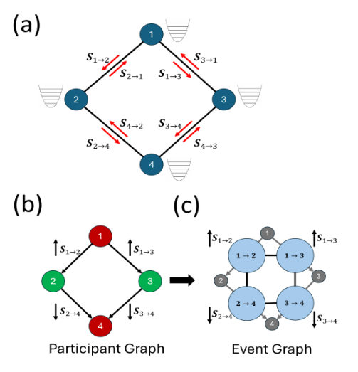
<figcaption class="paper-figure-caption"><b>Fig 1.</b> FIG. 1. (a) A 4-node graph with QHO at each participant node and 2 Schwinger isospins of form Sj→k and Sk→j. The red arrows indicate edge direction. (b) Simple participant graph with 4 participant nodes and 2 event paths 1 →2 →4 and 1 →3 →4. (c) Line-graph transformation of (b) to event graph where event edges become nodes, participant nodes are shaded to indicate latency, and bidirectional edges connect event nodes that have participant nodes in common.</figcaption>
</figure>
<figure class="paper-figure-card">
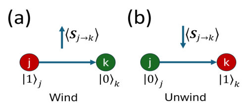
<figcaption class="paper-figure-caption"><b>Fig 2.</b> FIG. 2. Reference graph examples of binary event archetypes, wind and unwind, expressed via states: (a) |1⟩j ⊗|0⟩k, corre- sponding to isospin up, and (b) |0⟩j ⊗|1⟩k, corresponding to isospin down.</figcaption>
</figure>
</div>

<p><strong>Summary.</strong> This work proposes a novel quantum framework to analyze event graphs, treating them as physical systems governed by an XY-type spin Hamiltonian derived from Lattice Gauge Theory. It bridges abstract graph learning concepts with rigorous quantum mechanics by mapping latent participant states onto observable event isospins. The resulting model can be implemented using quantum-inspired graph transformer architectures for anomaly detection.</p>
<p><strong>Why it may be interesting.</strong> The explicit connection between lattice gauge theory (a tool from condensed matter/high energy physics) and the structure of modern graph neural networks is highly relevant for theoretical physicists exploring quantum information applications in complex systems modeling.</p>
<details>
<summary>Detailed structure</summary>
<p><strong>Main problem.</strong> The paper develops a quantum framework to analyze event graphs derived from classical datasets, specifically for anomaly detection.</p>
<p><strong>Main result.</strong> It establishes a mathematical bridge between graph learning (event graphs) and quantum mechanics by formulating the dynamics using an XY-type spin model governed by a Lattice Gauge Theory Hamiltonian.</p>
<p><strong>Method.</strong> The approach involves mapping participant graphs to event graphs via a line-graph transformation, assigning Quantum Harmonic Oscillators (QHOs), and then deriving an effective Hamiltonian structure suitable for graph neural network architectures.</p>
<p><strong>Model / system.</strong> The system is modeled by a directed participant graph $G(V, E)$ whose edges generate Schwinger isospins. This leads to an event graph $    ilde{G}$ where dynamics are governed by a Kogut-Susskind Hamiltonian (KSH) acting on observable anomalous spins.</p>
<p><strong>Key observables.</strong> The expectation value of the edge isospin $\langle S_{j	o k} 
angle$ reveals partial information about hidden participant states; the final classical score $s_\ell$ is read out from the reduced density operator $
ho^{(   ext{out})}_{\ell}$.</p>
<p><strong>Important parameters / regimes.</strong> The truncation dimension $d=2$ (leading to Ising-like dynamics) and the coupling strengths $J_{l,l'}$ and local fields $h_\ell$ in the Hamiltonian are key parameters.</p>
<p><strong>Assumptions / limitations.</strong> A primary assumption is the lowest nontrivial truncation of the local Hilbert space ($d=2$). Furthermore, practical implementations rely on approximating the global reduced state by preserving local coherence ($
ho^{(   ext{out})}<em _ell="\ell">{\ell} \approx 
ho^{(L,M)}</em>$).</p>
<p><strong>Figures summary.</strong> Figure 1 illustrates the mapping from participant graphs to event graphs using QHOs and isospins. Figure 2 shows reference graph examples of binary event archetypes corresponding to specific isospin states.</p>
<p><strong>Paper structure.</strong> The paper first defines the quantum structure on the participant graph (QHOs, Schwinger isospins). It then applies a line-graph transformation to define observable nodes/edges in the event graph. The dynamics are formulated via a U(1) LGT leading to an XY-type Hamiltonian. Finally, it details how this physical model can be realized and trained using quantum-inspired graph transformer architectures.</p>
</details>
<details>
<summary>Abstract</summary>
<p>Graph representations of discrete events provide a natural foundation for machine-learning models of anomaly detection, yet they also suggest a deeper quantum description in which graph structure gives rise to interacting quantum degrees of freedom. We develop a quantum framework based on a directed participant graph whose edges represent events connecting pairs of source and destination vertices. A line-graph transformation maps each event to a node of a bidirectional event graph, whose edges inherit relational information from the participant graph. Since event datasets are naturally organized as collections of event records, their raw attributes align directly with the nodes of the event graph. A quantum harmonic oscillator (QHO) is assigned to every node of the participant graph, with the collective Hilbert space of these QHOs providing a complete basis for representing quantum states. Every directed edge of the participant graph thereby acquires a Schwinger isospin arising from the two endpoint oscillators. Under the line-graph transformation, event-graph nodes correspond to observable isospins whose interactions through bidirectional edges provide a natural substrate for learning from event datasets, while the quantum states associated with the underlying participant nodes remain latent and inaccessible to direct observation. Within this framework we formulate a compact U(1) lattice gauge theory (LGT) on the event graph that leads to a Kogut-Susskind Hamiltonian (KSH) in the form of an XY-type spin model governing the dynamics of sparse anomalous-event isospins immersed in a bath of many nominal events. The proposed framework establishes a mathematical foundation for quantum-inspired graph-based anomaly detection and provides a principled bridge between graph learning, LGT, and quantum information.</p>
</details>
<p><sub><a href="#top">↑ back to top</a></sub></p>

<p><a id="paper-2608.06100"></a></p>
<h3 id="an-effective-string-theory-toolbox-for-quantum-hall-interfaces-iii-open-worldsheets-endpoint-conditions-and-branes"><a href="http://arxiv.org/abs/2608.06100v1">An Effective String Theory Toolbox for Quantum Hall Interfaces III: Open Worldsheets, Endpoint Conditions, and Branes</a></h3>
<p><strong>Authors:</strong> Ken K. W. Ma<br>
<strong>Type:</strong> theory · <strong>Category:</strong> strongly correlated electrons · <strong>PDF:</strong> <a href="https://arxiv.org/pdf/2608.06100v1">https://arxiv.org/pdf/2608.06100v1</a><br>
<strong>Analysis basis:</strong> full PDF text, analyzed in chunks
<strong>Topic relevance:</strong> 🔥 <code>Keldysh / 2PI / non-Gaussian methods</code> <strong>4/5</strong> · <code>correlated / nonlocal dissipation</code> <strong>3/5</strong> · <code>driven-dissipative phase transition</code> <strong>3/5</strong> · <code>methods for driven-dissipative</code> <strong>3/5</strong> · <code>non-equilibrium dynamics</code> <strong>3/5</strong> · <code>Kondo &amp; dissipative impurity</code> <strong>2/5</strong> · <code>non-equilibrium universality</code> <strong>2/5</strong> · <code>analog quantum simulation</code> <strong>1/5</strong> · <code>measurement-induced transitions</code> <strong>1/5</strong> · <code>quantum measurements</code> <strong>1/5</strong> · <code>spintronics-quantum-optics interface</code> <strong>1/5</strong></p>
<div class="figure-strip-hint">↔ Scroll figures horizontally</div>
<div class="paper-figures-scroll">
<figure class="paper-figure-card">
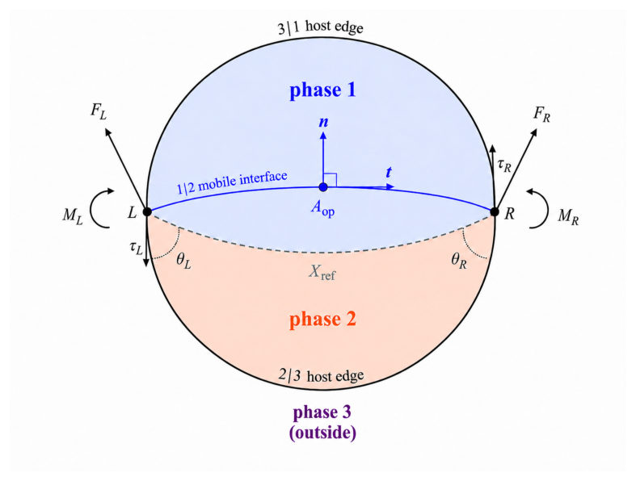
<figcaption class="paper-figure-caption"><b>Fig 1.</b> FIG. 1. Schematic geometry of an open mobile QH interface. The blue 1|2 interface terminates at endpoints L and R on a circular support whose upper and lower arcs form the 3|1 and 2|3 host edges, respectively. The dashed curve Xref, together with the mobile segment and the support arcs, defines the capped relative area Aop. The vectors t and n are the unit tangent and normal of the mobile interface. The support tangents τL and τR are shown with a common counterclockwise orientation of the circular boundary, and therefore point downward at L and upward at R. The quantities Fa and Ma denote the transmitted endpoint force and bending moment. The dotted endpoint arcs indicate the contact-angle...</figcaption>
</figure>
</div>

<p><strong>Summary.</strong> This paper develops an advanced string theory toolbox to handle the complex physics of mobile Quantum Hall (QH) interfaces that terminate at edges. It constructs a junction framework that rigorously enforces charge and anomaly conservation across these boundaries. The result provides a systematic, operational definition for QH branes and endpoint theories.</p>
<p><strong>Why it may be interesting.</strong> This work provides a rigorous, field-theoretic approach to open quantum systems boundaries, which is highly relevant for understanding dissipation, coupling to leads, or interfaces in condensed matter systems like superconducting qubits or topological insulators.</p>
<details>
<summary>Detailed structure</summary>
<p><strong>Main problem.</strong> The primary challenge is developing a consistent theoretical framework for determining the endpoint data required for a freely moving Quantum Hall (QH) interface that terminates on a physical or topological boundary.</p>
<p><strong>Main result.</strong> The authors establish an open-worldsheet junction framework, showing that charge conservation and anomaly flow dictate that specific localized excitations, like a lone chiral Majorana, cannot terminate without satisfying complex continuity conditions.</p>
<p><strong>Method.</strong> The work employs variational principles applied to the worldsheet action, developing specialized boundary functionals (like the capped relative-area functional) to enforce consistency across geometric, material, and topological sectors.</p>
<p><strong>Model / system.</strong> The model is a mobile QH interface treated as an open worldsheet embedded in a background manifold. It incorporates concepts from string theory, chiral edge states, and topological order relevant to fractional quantum Hall physics.</p>
<p><strong>Key observables.</strong> Endpoint force (F), bending moment (M), material charge ($Q_{mat}$), total charged-boson zero mode ($Q_{seg}$), and the scattering matrix $S_\gamma(\omega)$.</p>
<p><strong>Important parameters / regimes.</strong> The filling factors ($
u$), topological sectors, geometric support curves, and coupling constants governing anomaly flow.</p>
<p><strong>Assumptions / limitations.</strong> The analysis is restricted to fixed open segments; processes involving worldsheet splitting or joining are considered beyond the scope of this specific construction.</p>
<p><strong>Figures summary.</strong> Figure 1 schematically illustrates the geometry of an open mobile QH interface terminating at endpoints L and R on a support curve, defining the capped relative area $A_{op}$.</p>
<p><strong>Paper structure.</strong> The paper builds from establishing mechanical boundary terms via variational calculus to formulating the junction framework. It then details charge conservation laws, analyzes endpoint completion using topological sectors (open Wilson lines), and concludes with specific scattering analyses for Majorana junctions.</p>
</details>
<details>
<summary>Abstract</summary>
<p>A freely moving quantum Hall (QH) interface may end on a physical edge or topological boundary, but fixed-edge theory cannot determine what endpoint data make such a termination consistent. Here we formulate an open-worldsheet junction framework in which the embedding, material charge, anomaly flow, and topological boundary condition are organized together. The endpoint is specified by a geometric support and variational boundary data, together with condensable topological sectors and any outgoing channels required to absorb or continue the worldsheet flux. This construction extends the charge--shape relation to an interval and shows why a lone chiral Majorana cannot terminate on a finite-dimensional endpoint degree of freedom. It gives an operational definition of a QH brane and a systematic basis for endpoint and network theories of dynamical QH interfaces.</p>
</details>
<p><sub><a href="#top">↑ back to top</a></sub></p>

<p><a id="paper-2608.05935"></a></p>
<h3 id="exponential-speedup-of-entanglement-generation-by-quantum-mpemba-effects"><a href="http://arxiv.org/abs/2608.05935v1">Exponential Speedup of Entanglement Generation by Quantum Mpemba Effects</a></h3>
<p><strong>Authors:</strong> Sara M. Benjadi, Reinhold Egger, Igor Gornyi, Andrea Nava<br>
<strong>Type:</strong> theory · <strong>Category:</strong> statistical mechanics · <strong>PDF:</strong> <a href="https://arxiv.org/pdf/2608.05935v1">https://arxiv.org/pdf/2608.05935v1</a><br>
<strong>Analysis basis:</strong> full PDF text, analyzed in chunks
<strong>Topic relevance:</strong> 🔥 <code>correlated / nonlocal dissipation</code> <strong>4/5</strong> · 🔥 <code>entanglement &amp; information structure</code> <strong>4/5</strong> · <code>driven-dissipative phase transition</code> <strong>3/5</strong> · <code>methods for driven-dissipative</code> <strong>3/5</strong> · <code>non-equilibrium dynamics</code> <strong>3/5</strong> · <code>Keldysh / 2PI / non-Gaussian methods</code> <strong>2/5</strong> · <code>non-equilibrium universality</code> <strong>2/5</strong> · <code>analog quantum simulation</code> <strong>1/5</strong> · <code>exotic spin models in light-matter</code> <strong>1/5</strong> · <code>scars &amp; prethermalization</code> <strong>1/5</strong></p>
<div class="figure-strip-hint">↔ Scroll figures horizontally</div>
<div class="paper-figures-scroll">
<figure class="paper-figure-card">
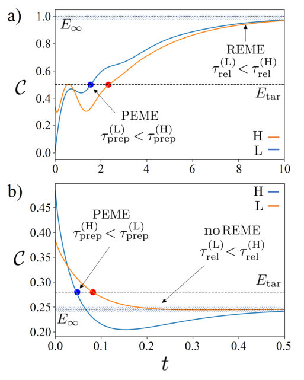
<figcaption class="paper-figure-caption"><b>Fig 1.</b> FIG. 1. Entanglement MEs for the concurrence, E(ρ) = C(ρ), of the I2KM, see Eq. (7), with Jh = 1 and other parameters specified in the End Matter. The shown results were obtained by numerically solving Eq. (1). (a) Direct effect: Two weakly entangled initial states (L, H) evolve toward a highly entangled stationary state with C(∞) = E∞. The dotted region around E∞has the width 2Eth. Since C(L)(t) (blue curve) reaches and permanently surpasses the threshold Etar earlier than C(H)(t) (orange curve), the PEME occurs. We also observe the REME at long times. (b) Inverse effect: Two highly entangled initial states (H, L) approach a weakly entangled stationary state for t →∞. The inverse PEME is...</figcaption>
</figure>
<figure class="paper-figure-card">
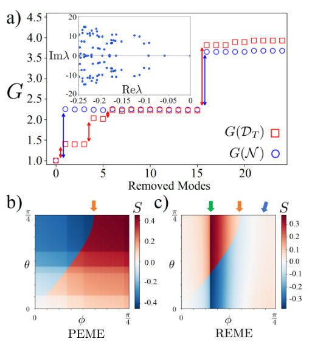
<figcaption class="paper-figure-caption"><b>Fig 2.</b> FIG. 2. Results for the dissipative long-range Ising model with N = 6 sites, see Eq. (9), using E(ρ) = N(ρ) with a 3|3 bipartition. They are obtained from Eq. (1) for J = 1, α = 0.5, and hx = 5/6, using DT,th = 10−3, Nth = 10−5. (a) Relaxation time speedups G(DT ) and G(N), see Eq. (10), vs number of removed Lindbladian modes, for γ = 1/6. The inset shows the slow-mode part of the spectrum of L. (b) Normalized time difference S for the PEME, defined as in Eq. (10) but with τrel →τprep, shown as color-scale plot in the ϕ–θ plane. These angles parameterize the two initial states (11). The PEME corresponds to S &gt; 0. We use γ = 1/3 and Etar = 0.8. (c) Same as (b) but for the REME. In (b) and...</figcaption>
</figure>
</div>

<p><strong>Summary.</strong> This paper explores 'quantum Mpemba effects' to show that entanglement generation and decay can be exponentially accelerated or slowed down. By analyzing the spectral properties of open quantum systems governed by Lindblad dynamics, the authors derive conditions for these speedups using specific entanglement measures. This work is significant for understanding non-equilibrium resource management in quantum technologies.</p>
<p><strong>Why it may be interesting.</strong> It provides a powerful theoretical framework for understanding non-equilibrium dynamics in open quantum systems, showing how engineered dissipation can dramatically alter relaxation rates of key resources like entanglement.</p>
<details>
<summary>Detailed structure</summary>
<p><strong>Main problem.</strong> The study investigates how quantum Mpemba effects can exponentially accelerate entanglement generation or slow down its decay in open quantum systems.</p>
<p><strong>Main result.</strong> Exponential speedups are demonstrated by engineering the system's dynamics to suppress slow spectral modes, showing that these effects can arise independently of conventional mechanisms.</p>
<p><strong>Method.</strong> The analysis uses spectral decomposition of the Lindblad master equation and compares entanglement evolution using different measures (e.g., Concurrence vs. Logarithmic Negativity).</p>
<p><strong>Model / system.</strong> The theory is applied to open quantum systems evolving under a Lindblad master equation, with specific examples including the dissipative two-site Kitaev model and a long-range Ising chain.</p>
<p><strong>Key observables.</strong> Entanglement measures (Concurrence, Logarithmic Negativity), preparation/relaxation times ($   au_{    ext{prep}},     au_{    ext{rel}}$), and spectral coefficients ($Z^{(N)}_k$).</p>
<p><strong>Important parameters / regimes.</strong> Dissipation rates ($\gamma, \kappa$), coupling strengths ($\Delta$), and the choice of entanglement monotone.</p>
<p><strong>Assumptions / limitations.</strong> The long-time dynamics are analyzed via spectral decomposition, assuming Fréchet differentiability for certain observables.</p>
<p><strong>Figures summary.</strong> Figures illustrate mode visibility diagrams ($Z^{(N)}_k$) showing conditions for speedup, and time evolution plots comparing different entanglement measures under varying parameters.</p>
<p><strong>Paper structure.</strong> The paper introduces two types of entanglement Mpemba effects (PEME and REME), derives the necessary spectral conditions using linear approximations, applies these concepts to specific models like the I2KM, and compares results across various entanglement monotones.</p>
</details>
<details>
<summary>Abstract</summary>
<p>Entanglement is a key resource for quantum technologies. We show that protocols employing quantum Mpemba effects allow one to exponentially accelerate the generation of entanglement, or to slow down the decay thereof. Two entanglement Mpemba effects with different operational meaning are introduced, focusing either on the task of rapidly generating a certain threshold value for entanglement or on achieving the asymptotic steady-state value. We show that entanglement Mpemba effects depend on the chosen entanglement measure. Using cluster elimination methods, many-body quantum systems also benefit from the exponential speedup of entanglement generation, as we demonstrate for a dissipative long-range Ising chain.</p>
</details>
<p><sub><a href="#top">↑ back to top</a></sub></p>

<p><a id="paper-2608.06006"></a></p>
<h3 id="measurement-induced-entanglement-hamiltonian"><a href="http://arxiv.org/abs/2608.06006v1">Measurement-induced entanglement Hamiltonian</a></h3>
<p><strong>Authors:</strong> Viktor Eisler, Erik Tonni<br>
<strong>Type:</strong> theory · <strong>Category:</strong> statistical mechanics · <strong>PDF:</strong> <a href="https://arxiv.org/pdf/2608.06006v1">https://arxiv.org/pdf/2608.06006v1</a><br>
<strong>Analysis basis:</strong> full PDF text, analyzed in chunks
<strong>Topic relevance:</strong> 🔥 <code>entanglement &amp; information structure</code> <strong>4/5</strong> · 🔥 <code>measurement-induced transitions</code> <strong>4/5</strong> · <code>quantum measurements</code> <strong>3/5</strong> · <code>Keldysh / 2PI / non-Gaussian methods</code> <strong>2/5</strong> · <code>driven-dissipative phase transition</code> <strong>2/5</strong> · <code>non-equilibrium universality</code> <strong>2/5</strong> · <code>Kondo &amp; dissipative impurity</code> <strong>1/5</strong> · <code>analog quantum simulation</code> <strong>1/5</strong> · <code>correlated / nonlocal dissipation</code> <strong>1/5</strong> · <code>methods for driven-dissipative</code> <strong>1/5</strong> · <code>non-equilibrium dynamics</code> <strong>1/5</strong></p>
<div class="figure-strip-hint">↔ Scroll figures horizontally</div>
<div class="paper-figures-scroll">
<figure class="paper-figure-card">

<figcaption class="paper-figure-caption"><b>Fig 1.</b> FIG. 1. Measurement setup (top) and conformal map from the compactified complex plane with two slits to the cylinder (bottom). Filled and empty circles in the segments M1 and M2 represent the measurement outcomes 1 and 0 respectively.</figcaption>
</figure>
<figure class="paper-figure-card">

<figcaption class="paper-figure-caption"><b>Fig 2.</b> FIG. 2. Entanglement entropy against induced charge for all the 22s possible measurement outcomes, with s = 7 and ℓ= 20 (top squares) as well as ℓ= 10 (bottom circles). The color code describes the corresponding Born probabilities on a logarithmic scale. The black solid lines show the CFT result, given by (3) and (4).</figcaption>
</figure>
<figure class="paper-figure-card">

<figcaption class="paper-figure-caption"><b>Fig 3.</b> FIG. 3. Inverse temperature profiles β(x) obtained from the continuum limit of the lattice EH, for various s and ℓ= 20 (filled symbols) as well as ℓ= 40 (empty symbols), with the ratio s/ℓkept fixed. The lines of matching color show the scaled CFT result (6).</figcaption>
</figure>
<figure class="paper-figure-card">

<figcaption class="paper-figure-caption"><b>Fig 4.</b> FIG. 4. Chemical potential µm(x) obtained from the con- tinuum limit of the lattice EH, for various measurement out- comes m = m1 ∪m2 corresponding to different δ (symbols). The lines of matching color show the r.h.s. of Eq. (8), with the density evaluated as in (9) from the lattice data. The interval sizes are ℓ= 40 and s = 39 for δ ∈{0, π}, as well as s = 38 for δ ∈{π/2, 2π}.</figcaption>
</figure>
<figure class="paper-figure-card">

<figcaption class="paper-figure-caption"><b>Fig 5.</b> FIG. 5. Scaled charge density for the measurement outcomes with δ = 0 and δ = π (see Fig. 4), for two different ℓ (filled/empty symbols) at fixed ratio s/ℓ= 39/40. The solid lines show the ansatz (9). The vertical scale is logarithmic.</figcaption>
</figure>
</div>

<p><strong>Summary.</strong> This paper analyzes the entanglement Hamiltonian generated in a fermionic chain after partial measurements. By mapping the problem onto a thermal field theory using conformal mappings, the authors show that the EH encodes detailed information about the measurement outcome, which is richer than what can be obtained solely from the entropy. This establishes a strong link between quantum measurement processes and fundamental concepts of statistical mechanics.</p>
<p><strong>Why it may be interesting.</strong> This work provides deep insights into how measurement backaction modifies entanglement structure, linking it rigorously to thermodynamic concepts like chemical potentials within the framework of CFT for free fermions.</p>
<details>
<summary>Detailed structure</summary>
<p><strong>Main problem.</strong> The study investigates the entanglement Hamiltonian (EH) of an infinite hopping chain's ground state following partial projective measurements in the occupation basis.</p>
<p><strong>Main result.</strong> The EH for post-selected states contains more outcome-specific information than the corresponding entropy, and its local description relates to a grand-canonical thermal system via conformal field theory techniques.</p>
<p><strong>Method.</strong> The analysis employs Conformal Field Theory (CFT) methods, mapping the measurement process onto a path integral on a cylinder geometry derived from complex conformal mappings.</p>
<p><strong>Model / system.</strong> The model is an infinite chain of non-interacting fermions governed by a simple hopping Hamiltonian. The system undergoes partial projective measurements in two disconnected segments.</p>
<p><strong>Key observables.</strong> Entanglement Hamiltonian (EH), Entanglement Entropy ($S$), Induced Charge Density ($
ho(x)$), and Local Chemical Potential ($\mu_m(x)$).</p>
<p><strong>Important parameters / regimes.</strong> The local inverse temperature $eta(x)$, the total induced charge $Q$, and parameters related to boundary phases ($\delta$).</p>
<p><strong>Assumptions / limitations.</strong> The analysis relies on taking a continuum limit from lattice results and utilizing CFT descriptions for the reduced density matrix.</p>
<p><strong>Figures summary.</strong> Figure 1 illustrates the measurement setup and the conformal map onto a cylinder. Figure 2 plots entanglement entropy versus induced charge, comparing numerical data against the theoretical CFT prediction $S(Q)$.</p>
<p><strong>Paper structure.</strong> The paper proceeds by defining the physical system and measurements, deriving the reduced density matrix using CFT techniques (conformal mapping), establishing the relationship between the EH and a thermal grand-canonical state, and finally comparing the resulting entropy/chemical potential structure to lattice calculations.</p>
</details>
<details>
<summary>Abstract</summary>
<p>We study the entanglement Hamiltonian of an infinite hopping chain in its ground state, after partial projective measurements in the occupation basis. For a segment separated by two measurement regions from the rest of the chain, we show that the reduced density matrix can be related to a grand-canonical state via a conformal mapping and a gauge transformation in the underlying field-theory description. The entanglement Hamiltonian is then described by a local inverse temperature that vanishes as a square root around the endpoints and is independent of the particular measurement outcome. In sharp contrast, the local chemical potential is shown to be related to the induced charge density in the segment. Hence the entanglement Hamiltonian of a post-selected state contains much more information on the measurement outcome than the respective entropy.</p>
</details>
<p><sub><a href="#top">↑ back to top</a></sub></p>

<p><a id="paper-2608.05496"></a></p>
<h3 id="morphology-of-frozen-labyrinths-from-irreversible-threshold-dynamics"><a href="http://arxiv.org/abs/2608.05496v1">Morphology of frozen labyrinths from irreversible threshold dynamics</a></h3>
<p><strong>Authors:</strong> Daniel Richard Levy<br>
<strong>Type:</strong> theory · <strong>Category:</strong> statistical mechanics · <strong>PDF:</strong> <a href="https://arxiv.org/pdf/2608.05496v1">https://arxiv.org/pdf/2608.05496v1</a><br>
<strong>Analysis basis:</strong> full PDF text, analyzed in chunks
<strong>Topic relevance:</strong> 🔥 <code>non-equilibrium dynamics</code> <strong>4/5</strong> · <code>driven-dissipative phase transition</code> <strong>3/5</strong> · <code>methods for driven-dissipative</code> <strong>3/5</strong> · <code>non-equilibrium universality</code> <strong>3/5</strong> · <code>analog quantum simulation</code> <strong>2/5</strong> · <code>scars &amp; prethermalization</code> <strong>2/5</strong> · <code>Frenkel-Kontorova</code> <strong>1/5</strong> · <code>Keldysh / 2PI / non-Gaussian methods</code> <strong>1/5</strong> · <code>correlated / nonlocal dissipation</code> <strong>1/5</strong> · <code>exotic spin models in light-matter</code> <strong>1/5</strong></p>
<div class="figure-strip-hint">↔ Scroll figures horizontally</div>
<div class="paper-figures-scroll">
<figure class="paper-figure-card">

<figcaption class="paper-figure-caption"><b>Fig 1.</b> FIG. 1. Critical stripe width. Solid curve: the exact thresh- old w∗(σ) below which the edge row of a width-w stripe of −1 spins in a +1 sea ceases to be eligible, from Eq. (5); w∗is integer valued, hence the staircase. Stripes with w ≥w∗are pinned and persist unchanged (shaded region above); nar- rower stripes erode from both edges to extinction (below). Circles: the threshold measured from the one-flip Gillespie dynamics at σ = 3, 6, 10, 16, coinciding with w∗in each case. The transition is sharp because erosion is self-reinforcing (re- moving a row lowers w and strengthens the eligibility con- dition), so a stripe either does not move at all or vanishes entirely.</figcaption>
</figure>
<figure class="paper-figure-card">

<figcaption class="paper-figure-caption"><b>Fig 2.</b> FIG. 2. Curvature drive and universal mobility. (a) Fraction of the droplet boundary eligible to flip, versus z = ¯m/δ: the mean field on the boundary ring, measured in units of the spread of that field around the ring. Points span σ = 4–16 and radii from a few σ to 30σ and collapse onto a single monotone curve g(z), so the erosion rate is set by this one ratio rather than by σ and R separately. (b) The origin of the collapse: the measured distribution of the boundary field m(θ) for σ = 6, R = 120 (kernel density estimate over the ring and over sub- lattice placements of the disk center). A site flips only where m &gt; 0, so the eligible fraction is the shaded area, and z measures how far the...</figcaption>
</figure>
<figure class="paper-figure-card">

<figcaption class="paper-figure-caption"><b>Fig 3.</b> FIG. 3. The composition window and its control by z0. (a) Frozen (steady state) configurations at σ = 4 across the win- dow, at increasing standardized bias z0 (values above each panel). Near z0 = 0 the state is a balanced labyrinth. As z0 grows the minority is progressively cascaded away, and by z0 ≈1.5 the state is near-consensus. (b) The final magne- tization |M| versus z0 for σ = 4, 6, 8, 10. Plotted against z0 the curves for different σ collapse, confirming that the ini- tial condition enters only through the standardized bias; z∗ 0 is marked under the two operational definitions. (c) The on- set z∗ 0 versus σ over σ ∈[4, 16], under both definitions, with per-σ crossing uncertainties...</figcaption>
</figure>
<figure class="paper-figure-card">

<figcaption class="paper-figure-caption"><b>Fig 4.</b> FIG. 4. Frozen morphology at balance (p0 = 1 2). (a) An absorbing-state configuration at σ = 4: a bicontinu- ous labyrinth. (b) Radially averaged structure factor at σ = 4, 8, 16, each normalized to its maximum. The spectra decay monotonically with no finite-k peak: the purely posi- tive kernel selects no wavelength, and the pattern is arrested coarsening rather than a stationary patterned phase. (c) Fea- ture width ℓw = 1/w versus σ (log-log, 48 realizations per point at L = 40σ). A power law (ℓw ≈10.6 σ0.30, solid) de- scribes the data far better than an additive form (0.52 σ+14.7, dashed; rms residuals 0.65 versus 1.54), but no single power law fits within the statistical uncertainties:...</figcaption>
</figure>
<figure class="paper-figure-card">

<figcaption class="paper-figure-caption"><b>Fig 5.</b> FIG. 5. The frozen state of our one-flip model (left) and a single majority pass of the same initial condition (right), at σ = 4, p0 = 1 2. Both break the initial noise into two-phase structure at the interaction scale, but the dynamics does more than threshold the smoothed initial field once: it consolidates the majority pass’s smaller features into markedly fewer and larger domains, eroding minority pockets and pinching off thin necks.</figcaption>
</figure>
</div>

<p><strong>Summary.</strong> This paper analyzes how making a local consensus rule irreversible changes pattern formation in a binary spin system. The key finding is that irreversibility arrests the system into stable, mixed labyrinth patterns characterized by 'frustrated' sites. This work provides a detailed comparison between reversible and irreversible relaxation dynamics on a lattice.</p>
<p><strong>Why it may be interesting.</strong> While focused on classical statistical mechanics, the concept of irreversible dynamics leading to metastable, patterned states is highly relevant to understanding non-equilibrium phase transitions in complex systems, which has parallels in quantum quench dynamics or driven many-body systems.</p>
<details>
<summary>Detailed structure</summary>
<p><strong>Main problem.</strong> The study investigates the fundamental differences between reversible and irreversible dynamics when a local imitation rule drives a binary field toward consensus or striped patterns.</p>
<p><strong>Main result.</strong> Irreversibility causes the system to freeze into stable, balanced non-consensus labyrinth structures that would otherwise be eliminated by reversible relaxation. The resulting pattern is determined deterministically by initial conditions, with frustration marking the seams.</p>
<p><strong>Method.</strong> The authors compare two dynamics: a standard reversible threshold process (related to mean curvature flow) against an irreversible 'one-flip' rule on a lattice.</p>
<p><strong>Model / system.</strong> The model uses spins $s_i \in \{\pm 1\}$ on $\mathbb{Z}^2$ interacting via a Gaussian kernel. The dynamics involve local updates based on the weighted majority of neighbors, with the key distinction being that irreversible dynamics allow sites to flip at most once.</p>
<p><strong>Key observables.</strong> Frustrated spins (sites unable to flip against their local field), pattern morphology (bicontinuous labyrinths), and agreement metrics comparing different update orders.</p>
<p><strong>Important parameters / regimes.</strong> Interaction range ($\sigma$), initial spin composition ($p_0 \approx 1/2$), and the degree of irreversibility (the one-flip constraint).</p>
<p><strong>Assumptions / limitations.</strong> The comparison hinges on the single difference: the irreversible 'one-flip' rule versus the reversible relaxation process.</p>
<p><strong>Figures summary.</strong> Figures illustrate the contrast between consensus states (reversible) and frozen labyrinths (irreversible), showing frustrated sites marking collision seams, and demonstrating that healing these sites does not alter the coarse domain layout.</p>
<p><strong>Paper structure.</strong> The paper first establishes the dynamics and compares reversible/irreversible outcomes. It then analyzes specific geometries like flat stripes and droplets using continuum approximations derived from the lattice model. Finally, it rigorously separates the deterministic placement of domain walls from the secondary role of update-order effects via frustration.</p>
</details>
<details>
<summary>Abstract</summary>
<p>Majority threshold dynamics, in which each agent adopts the dominant state in a weighted neighborhood, relaxes a binary field toward consensus or stripes. We study what happens when this rule is made irreversible: each agent, interacting through a Gaussian kernel on a lattice, may flip out of its local weighted minority at most once. The reversible form is threshold dynamics of Merriman-Bence-Osher type, an exactly solvable calibration in which interfaces move by mean curvature with closed-form lattice pinning and mobility. Irreversibility changes the outcome. From random initial conditions, the one-flip rule freezes balanced non-consensus labyrinths that reversible relaxation drives away. The patterned regime is a window of initial spin compositions around equal balance, narrowing as the interaction range grows, controlled by a standardized bias whose onset is independent of scale over a fourfold range. The frozen morphology is arrested coarsening: bicontinuous at balance, with a feature width that grows sublinearly and falls below the interaction range at large scales. We determine the mechanism by intervention. Fixing the initial condition while varying the update order shows that the coarse domain layout is deterministic, while the update order enters only in a secondary first-passage race that fine-tunes the wall positions the deterministic dynamics has already set. Those walls are marked by frustration: agents frozen against their own local field. This signature is identically absent from any reversible relaxation, is overwhelmingly interfacial, and carries almost none of the pattern's large-scale shape.</p>
</details>
<p><sub><a href="#top">↑ back to top</a></sub></p>

<p><a id="paper-2608.05984"></a></p>
<h3 id="dissipation-induced-bulk-and-boundary-criticality-in-the-haldane-chain"><a href="http://arxiv.org/abs/2608.05984v1">Dissipation-induced bulk and boundary criticality in the Haldane chain</a></h3>
<p><strong>Authors:</strong> Zhenjiu Wang, Manuel Weber<br>
<strong>Type:</strong> theory · <strong>Category:</strong> other · <strong>PDF:</strong> <a href="https://arxiv.org/pdf/2608.05984v1">https://arxiv.org/pdf/2608.05984v1</a><br>
<strong>Analysis basis:</strong> full PDF text, analyzed in chunks
<strong>Topic relevance:</strong> 🔥 <code>driven-dissipative phase transition</code> <strong>4/5</strong> · <code>correlated / nonlocal dissipation</code> <strong>3/5</strong> · <code>methods for driven-dissipative</code> <strong>3/5</strong> · <code>non-equilibrium universality</code> <strong>3/5</strong> · <code>non-equilibrium dynamics</code> <strong>2/5</strong> · <code>Frenkel-Kontorova</code> <strong>1/5</strong> · <code>Keldysh / 2PI / non-Gaussian methods</code> <strong>1/5</strong> · <code>Kondo &amp; dissipative impurity</code> <strong>1/5</strong> · <code>analog quantum simulation</code> <strong>1/5</strong> · <code>exotic spin models in light-matter</code> <strong>1/5</strong></p>
<div class="figure-strip-hint">↔ Scroll figures horizontally</div>
<div class="paper-figures-scroll">
<figure class="paper-figure-card">

<figcaption class="paper-figure-caption"><b>Fig 1.</b> FIG. 1. Bulk criticality of the Haldane chain. Correlation ratios calculated from the (a) spin and (b) string order pa- rameters as a function of α and for different systems sizes L. The dashed lines indicate our extrapolated critical couplings [51]. (c) Local susceptibility at α = αc as function of temper- ature for various L. (d) Spin and string correlation function at r = L/2 as a function of L. The dashed lines in (c) and (d) are power law fits to the asymptotic behavior [51].</figcaption>
</figure>
<figure class="paper-figure-card">

<figcaption class="paper-figure-caption"><b>Fig 2.</b> FIG. 3. Boundary response of the dimerized chain. (a) Finite- size analysis of the edge local moment, χedge/β, as a function of α. The red triangle marks the bulk critical coupling αc. (b) Cedge(τ = 5β/48) at α = αc for different edge couplings α1/α. The black dashed line denotes the ϵ expansion result.</figcaption>
</figure>
<figure class="paper-figure-card">

<figcaption class="paper-figure-caption"><b>Fig 3.</b> FIG. 2. Boundary criticality of the Haldane chain. (a) Finite- size analysis of the edge local moment, χedge/β, as a function of α. The red triangle marks the bulk critical coupling αc. (b) χedge(β) at α = αc for different edge couplings α1/α. For comparison, we include the local susceptibility within the bulk. Dashed lines represent power-law fits.</figcaption>
</figure>
</div>

<p><strong>Summary.</strong> This paper investigates how coupling a Haldane spin chain to an ohmic bath induces quantum phase transitions, focusing particularly on the resulting boundary physics. Using QMC simulations and scaling analysis, the authors show that the topological nature of the SPT ground state leads to unique boundary criticality distinct from non-topological transitions. The work provides a framework for controlling edge properties in dissipative many-body systems.</p>
<p><strong>Why it may be interesting.</strong> This is highly relevant as it tackles non-equilibrium quantum dynamics in strongly correlated systems. The ability to tune boundary criticality via dissipation provides a powerful theoretical tool for understanding open quantum systems beyond simple equilibrium critical points.</p>
<details>
<summary>Detailed structure</summary>
<p><strong>Main problem.</strong> The study investigates how dissipation influences both bulk and boundary critical behavior in quantum spin chains, specifically starting from a Symmetry-Protected Topological (SPT) phase.</p>
<p><strong>Main result.</strong> The paper demonstrates that the topological edge modes exhibit a distinct boundary criticality compared to transitions out of trivial states. The analysis successfully extracts scaling dimensions for these boundary effects using QMC simulations and comparison with field theory expansions.</p>
<p><strong>Method.</strong> The research employs large-scale Quantum Monte Carlo (QMC) simulations, finite-size scaling analysis, and comparisons with $\epsilon$ expansion results derived from dissipative quantum field theories.</p>
<p><strong>Model / system.</strong> The primary system is the Haldane chain ($S=1$ spin chain), which is coupled to a dissipative ohmic bath. The study also analyzes related models like dimerized chains and the O(3)-symmetric nonlinear sigma model.</p>
<p><strong>Key observables.</strong> Generalized string order parameter ($\Delta_{	ext{string}}$), bulk correlation ratios ($R_{	ext{spin}}(L)$), edge local moment susceptibility ($\chi_{	ext{edge}}/eta$), and various scaling dimensions ($\Delta_e$, $\eta_{\parallel}$).</p>
<p><strong>Important parameters / regimes.</strong> Dissipation strength ($\alpha$), system size ($L$), and critical couplings ($\alpha_c$). The analysis compares results for the Haldane chain ($\delta=0$) versus trivial/dimerized states ($\delta=0.4$).</p>
<p><strong>Assumptions / limitations.</strong> The analysis relies on mapping quantum dynamics to classical path integrals (for some models) and extrapolating finite-size data to infinite size using power laws.</p>
<p><strong>Figures summary.</strong> Figures illustrate bulk criticality measurements via spin/string order parameters vs. dissipation strength ($\alpha$), and boundary criticality via edge local moment susceptibility ($\chi_{	ext{edge}}/eta$) vs. $\alpha$.</p>
<p><strong>Paper structure.</strong> The work systematically compares the critical behavior of the Haldane chain (SPT) against a trivial state, analyzing both bulk exponents using correlation ratios and distinct boundary exponents derived from edge susceptibilities.</p>
</details>
<details>
<summary>Abstract</summary>
<p>We study the Haldane chain coupled to a dissipative ohmic bath. Using large-scale quantum Monte Carlo simulations, we identify a second-order quantum phase transition into an antiferromagnetic state with spontaneously broken SO(3) symmetry that is governed by an interacting fixed point with dynamical exponent $z\approx 2$. We derive a generalized string order parameter which indicates that the symmetry-protected topological ground state of the Haldane chain is stable for weak dissipation and develops a nontrivial scaling dimension at criticality. In particular, its topological edge modes display nontrivial boundary criticality that is distinct from an equivalent transition out of a trivial state; for the latter, we perform an accurate $ε$ expansion of a dissipative $φ^4$ theory with ordinary boundary conditions. Our setup realizes a spin impurity in a critical yet nonconformal antiferromagnet and paves the way for continuously tunable boundary criticality controlled by dissipation.</p>
</details>
<p><sub><a href="#top">↑ back to top</a></sub></p>

<p><a id="paper-2608.05936"></a></p>
<h3 id="dynamic-scaling-behavior-in-the-presence-of-a-periodic-magnetic-driving-across-ising-continuous-transitions"><a href="http://arxiv.org/abs/2608.05936v1">Dynamic scaling behavior in the presence of a periodic magnetic driving across Ising continuous transitions</a></h3>
<p><strong>Authors:</strong> Andrea Pelissetto, Ettore Vicari<br>
<strong>Type:</strong> theory · <strong>Category:</strong> statistical mechanics · <strong>PDF:</strong> <a href="https://arxiv.org/pdf/2608.05936v1">https://arxiv.org/pdf/2608.05936v1</a><br>
<strong>Analysis basis:</strong> full PDF text, analyzed in chunks
<strong>Topic relevance:</strong> 🔥 <code>non-equilibrium universality</code> <strong>4/5</strong> · <code>analog quantum simulation</code> <strong>3/5</strong> · <code>driven-dissipative phase transition</code> <strong>3/5</strong> · <code>methods for driven-dissipative</code> <strong>3/5</strong> · <code>non-equilibrium dynamics</code> <strong>3/5</strong> · <code>Frenkel-Kontorova</code> <strong>1/5</strong> · <code>Keldysh / 2PI / non-Gaussian methods</code> <strong>1/5</strong> · <code>correlated / nonlocal dissipation</code> <strong>1/5</strong> · <code>entanglement &amp; information structure</code> <strong>1/5</strong></p>
<div class="figure-strip-hint">↔ Scroll figures horizontally</div>
<div class="paper-figures-scroll">
<figure class="paper-figure-card">

<figcaption class="paper-figure-caption"><b>Fig 1.</b> FIG. 1: Time evolution of the rescaled magnetization A−ζM(t) for P = 100, σ = AP κ = 1, and several lattice sizes L. We show results for τ ≤10 (bottom), where the center of the oscillations clearly increases, for 92 ≤τ ≤100 (middle), where the center of the oscillations is still barely increasing, and finally for 500 ≤τ ≤505 (top), where the behavior is stationary, characterized by a vanishing average of the magnetization over one period. Note that the oscilla- tions are synchronized with the external field—their period is one in the variable τ—and that the amplitude Am does not apparently vary with τ. In the two lower panel we also added dotted vertical lines at integer values of τ,...</figcaption>
</figure>
<figure class="paper-figure-card">

<figcaption class="paper-figure-caption"><b>Fig 2.</b> FIG. 2: Dynamic scaling behavior of the magnetization (bot- tom) and of the subtracted bond-energy density (top), for σ = 1 and several values of P, and for τ ≤8. The size L is large enough that the data can be considered in the thermo- dynamic limit. In the insets we show the same quantities in time intervals around τ = 100 (using the data for the largest available lattices).</figcaption>
</figure>
<figure class="paper-figure-card">

<figcaption class="paper-figure-caption"><b>Fig 3.</b> FIG. 3: Period-averaged rescaled magnetization A−ζMa(t), for σ = 1, P = 100, 200, 300, in the thermodynamic limit. In the inset we use a semilogarithmic scale, to highlight the expo- nential approach to zero: the straight dashed line corresponds to a behavior proportional to exp(−τ/τs) with τs = 85.</figcaption>
</figure>
<figure class="paper-figure-card">

<figcaption class="paper-figure-caption"><b>Fig 4.</b> FIG. 6: Period-averaged rescaled magnetization for several values of σ, in the thermodynamic limit. The dashed straight lines correspond to the exponential functions Ma = ae−t/τs that interpolate the data: we use τs = 6, 85, 300, 1200 for σ = 2, 1, 3/4, 1/2, respectively.</figcaption>
</figure>
<figure class="paper-figure-card">

<figcaption class="paper-figure-caption"><b>Fig 5.</b> FIG. 4: Dynamic scaling results for the magnetization (bot- tom) and for the bond-energy density (top) at fixed σ = AP κ = 1/2. In the lower panel we draw vertical dotted lines at some integer values of τ, corresponding to minima of the magnetic field, to highlight the phase delay of the oscillations of the magnetization.</figcaption>
</figure>
</div>

<p><strong>Summary.</strong> This work analyzes how a periodically oscillating magnetic field drives the 2D Ising model across its continuous phase transition, revealing universal dynamic scaling laws. The key finding is that the system exhibits characteristic oscillatory behavior in its magnetization and energy density as time progresses relative to the driving period. This provides a theoretical framework for understanding non-equilibrium critical dynamics under external periodic forcing.</p>
<p><strong>Why it may be interesting.</strong> While focused on classical statistical mechanics, the methodology of analyzing non-equilibrium dynamics driven by time-periodic fields is highly relevant to open quantum systems where external periodic drives (e.g., in cavity QED or cold atoms) are used to probe quantum critical points or drive coherent evolution.</p>
<details>
<summary>Detailed structure</summary>
<p><strong>Main problem.</strong> The study investigates dynamic scaling behavior in classical ferromagnetic systems undergoing continuous phase transitions when subjected to a periodic external driving field.</p>
<p><strong>Main result.</strong> Periodic driving induces a peculiar dynamic scaling characterized by oscillatory behavior around a smooth curve that approaches a large-time stationary state, confirming theoretical predictions for the universality class.</p>
<p><strong>Method.</strong> The analysis employs dynamic finite-size scaling theory, generalizing it to incorporate time periodicity and analyzing the collapse of observables onto universal scaling functions.</p>
<p><strong>Model / system.</strong> The primary model is the two-dimensional (2D) Ising model on a square lattice. The system dynamics are governed by purely relaxational dynamics (Model A) at the critical temperature, driven by $h(t)=-A \cos(2\pi t/P)$.</p>
<p><strong>Key observables.</strong> Time-dependent magnetization ($M(t)$), subtracted bond-energy density ($E_s(t)$), and period-averaged rescaled quantities.</p>
<p><strong>Important parameters / regimes.</strong> The scaling variables are $ au = t/P$ (normalized time) and $\sigma = A P^\kappa$, where $\kappa = y_h/z$. The analysis examines limits such as large-$    au$ and small-$\sigma$.</p>
<p><strong>Assumptions / limitations.</strong> The theory assumes purely relaxational dynamics (Model A) and relies on the ability to reach the thermodynamic limit ($L 	o \infty$) for scaling predictions.</p>
<p><strong>Figures summary.</strong> Figures demonstrate dynamic scaling collapse for both magnetization and energy density under periodic driving, showing distinct regimes from initial transients to large-time stationary oscillations.</p>
<p><strong>Paper structure.</strong> The paper establishes the theoretical framework by generalizing finite-size scaling to include periodic driving. It then applies this theory to the 2D Ising model using numerical simulations to confirm the predicted dynamic scaling laws for magnetization and energy density, concluding with extensions to temperature driving protocols.</p>
</details>
<details>
<summary>Abstract</summary>
<p>We study the critical dynamics arising from a time-dependent periodic homogenous source coupled to the order-parameter field, which drives a classical ferromagnetic system across a continuous transition. For this purpose, we consider the paradigmatic two-dimensional (2D) Ising model in the presence of a periodic magnetic field $h(t)=-A\, \cos (2πt/P)$, evolving under a purely relaxational dynamics at the critical temperature. We show that the periodic driving gives rise to a peculiar dynamic scaling behavior in the thermodynamic limit, arising from a nontrivial interplay among the time $t$, the amplitude $A$ and period $P$ of $h(t)$. The relevant scaling variables are $τ=t/P$ and $σ=A P^κ$, with $κ= y_h/z$, where $y_h=(d+2-η)/2$ is the critical dimension of the magnetic field, and $z$ is dynamic exponent for the critical relaxational dynamics ($κ\approx 0.865$ for the 2D Ising model). The dynamic scaling behaviors of the magnetization and bond-energy density show an oscillatory behavior around a smooth curve which approaches a large-$τ$ stationary behavior. We also briefly discuss the dynamic behavior of an Ising system driven across the critical point by a periodic time-varying temperature at zero magnetic field.</p>
</details>
<p><sub><a href="#top">↑ back to top</a></sub></p>

<p><a id="paper-2608.06056"></a></p>
<h3 id="criteria-for-feasible-monte-carlo-stochastic-simulations-of-bosonic-markovian-open-quantum-dynamics"><a href="http://arxiv.org/abs/2608.06056v1">Criteria for Feasible Monte Carlo Stochastic Simulations of Bosonic Markovian Open Quantum Dynamics</a></h3>
<p><strong>Authors:</strong> Toma Yoneya, Kazuya Fujimoto, Yuki Kawaguchi<br>
<strong>Type:</strong> theory · <strong>Category:</strong> statistical mechanics · <strong>PDF:</strong> <a href="https://arxiv.org/pdf/2608.06056v1">https://arxiv.org/pdf/2608.06056v1</a><br>
<strong>Analysis basis:</strong> full PDF text, analyzed in chunks
<strong>Topic relevance:</strong> 🔥 <code>methods for driven-dissipative</code> <strong>4/5</strong> · <code>Keldysh / 2PI / non-Gaussian methods</code> <strong>3/5</strong> · <code>driven-dissipative phase transition</code> <strong>3/5</strong> · <code>correlated / nonlocal dissipation</code> <strong>2/5</strong> · <code>non-equilibrium dynamics</code> <strong>2/5</strong> · <code>non-equilibrium universality</code> <strong>2/5</strong> · <code>analog quantum simulation</code> <strong>1/5</strong> · <code>quantum measurements</code> <strong>1/5</strong></p>
<div class="figure-strip-hint">↔ Scroll figures horizontally</div>
<div class="paper-figures-scroll">
<figure class="paper-figure-card">

<figcaption class="paper-figure-caption"><b>Fig 1.</b> Figure 1: Schematic images of (a) the path-integral representation (20) and (b)-(c) the approximations of the GKSL equation in phase space. (b) Within the first-order approximation, the GKSL equation is approximated into the generalized Liouville equation [63, 64], where each point distributed by the initial s-ordered quasiprobability distribution function Ws(⃗α0, ⃗α∗ 0, t0) follows the classical equation of motion, the equation of motion of the classical path. (c) The effects of the second order of the quantum fluctuations are incorporated into the classical path as Gaussian noises, where each point follows the stochastic differential equation. Here, the GKSL equation is approximated into the...</figcaption>
</figure>
<figure class="paper-figure-card">

<figcaption class="paper-figure-caption"><b>Fig 2.</b> Figure 2: Relaxation dynamics of a two-site system of non-interacting atoms obeying the GKSL equation (80) starting from the pure coherent state ˆρ(0) = |αI1, αI2⟩⟨αI1, αI2|, where αI1 = √NI1eiπ/8 and αI2 = √NI2eiπ/4 with NI1 = 8 and NI2 = 2. Shown are (a) the remaining fraction of atoms n1 at site m = 1 and (b) the correlation of atoms at different sites C12, which are defined by Eq. (79). In each panel, we compare the numerically exact result (Exact) obtained by solving Eqs. (82)–(84) and the ones of the second-order approximation using the Glauber-Sudarshan P (P:2nd), Wigner (W:2nd), and Husimi Q function (Q:2nd). We choose µ/(ℏγ) = 1 and J/(ℏγ) = 1, and take 1000 samples for the initial...</figcaption>
</figure>
<figure class="paper-figure-card">

<figcaption class="paper-figure-caption"><b>Fig 3.</b> Figure 3: Relaxation dynamics of a two-site system of non-interacting atoms obeying the GKSL equation (80), starting from the pure coher- ent state. The quantities, parameters and the notations are the same as in Fig. 2, except that the first-order approximation is applied using the Glauber-Sudarshan P (P:1st), Wigner (W:1st), and Husimi Q functions (Q:1st). The insets depict NI-dependence of the deviation between each approximation and the numerically exact result at γt = 1. When varying NI, the fractions of atoms at each site are fixed as NI1/NI = 0.8 and NI2/NI = 0.2 in the initial state.</figcaption>
</figure>
<figure class="paper-figure-card">

<figcaption class="paper-figure-caption"><b>Fig 4.</b> Figure 4: Relaxation dynamics of a two-site system of non-interacting system with the symmetric incoherent hopping of atoms obeying the GKSL equation (87) starting from the pure coherent state. The quantities, parameters and the notations are same with the ones in Fig. 2. The insets depict the difference between the results of the second-order approximation and the numerically exact one.</figcaption>
</figure>
<figure class="paper-figure-card">

<figcaption class="paper-figure-caption"><b>Fig 5.</b> Figure 5: Relaxation dynamics of a two-site system of non-interacting system with the symmetric incoherent hopping of atoms obeying the GKSL equation (87) starting from the pure coherent state. The quantities, parameters and the notations are same with the ones in Fig. 3. The inset of (a) depicts NI-dependence of the difference between the results of each approximation and the numerically exact one at time γt = 1, and the inset of (b) depicts the difference between the results of the first-order approximation and the numerically exact one.</figcaption>
</figure>
</div>

<p><strong>Summary.</strong> This paper develops rigorous mathematical criteria to determine when stochastic Monte Carlo simulations can accurately model bosonic open quantum dynamics governed by the GKSL equation. By analyzing the positive semidefiniteness of the diffusion matrix derived from path integrals, the authors clarify the necessary conditions for these powerful simulation techniques to be both feasible and indispensable over mean-field approximations.</p>
<p><strong>Why it may be interesting.</strong> This work provides crucial theoretical guidelines for computational physicists attempting to simulate complex open quantum systems, clarifying when simple mean-field or truncated Wigner approaches are insufficient.</p>
<details>
<summary>Detailed structure</summary>
<p><strong>Main problem.</strong> The primary goal is establishing rigorous criteria for when Monte Carlo stochastic simulations are mathematically feasible and physically necessary for accurately modeling bosonic open quantum dynamics.</p>
<p><strong>Main result.</strong> The authors derive sufficient conditions, starting from the path integral formulation, that guarantee the positive semidefiniteness of the diffusion matrix, thus validating the use of stochastic methods over mean-field approximations.</p>
<p><strong>Method.</strong> The work combines path integral formulations with phase-space mapping using quasiprobability distributions (P, Wigner, Q functions) to derive and analyze corresponding Stochastic Differential Equations (SDEs).</p>
<p><strong>Model / system.</strong> The system involves bosonic open quantum many-body dynamics governed by the Gorini–Kossakowski–Sudarshan–Lindblad (GKSL) equation. The analysis is performed in phase space, considering interactions and dissipation from an environment.</p>
<p><strong>Key observables.</strong> Positive semidefiniteness of the diffusion matrix ($\mathbf{A} \succeq 0$), time evolution of quasiprobability functions ($W_s$), and quantum fluctuation terms.</p>
<p><strong>Important parameters / regimes.</strong> The analysis focuses on the thermodynamic limit, high-occupancy limits, and the nature of the jump operators (e.g., quadratic vs. general).</p>
<p><strong>Assumptions / limitations.</strong> The derivation relies on mapping the GKSL equation to a Fokker–Planck type description, which is only valid under specific conditions regarding higher-order quantum fluctuations.</p>
<p><strong>Paper structure.</strong> The paper systematically moves from defining the problem (GKSL dynamics) to establishing the mathematical framework (phase-space mapping and path integrals), deriving necessary feasibility criteria for stochastic simulation, and finally analyzing specific limits where approximations break down.</p>
</details>
<details>
<summary>Abstract</summary>
<p>The Monte Carlo sampling of the stochastic differential equations (SDEs) based on the quasiprobability distribution function, such as the Glauber--Sudarshan P, Wigner, and Husimi Q functions provides a powerful framework for investigating bosonic open quantum many-body dynamics described by the Gorini--Kossakowski--Sudarshan--Lindblad (GKSL) equation, while considering the effects of quantum fluctuations beyond the mean-field approximation. However, the stochastic Monte Carlo simulation is possible only when the corresponding Fokker--Planck equation has a positive-semidefinite diffusion matrix, and the general conditions for the diffusion matrix to be positive semidefinite have remained unclear. In this work, starting from the path integral formulation, we first derive the sufficient conditions under which the diffusion matrix is positive semidefinite for an arbitrary Hamiltonian, jump operators, and choice of quasiprobability distribution functions. We also analytically derive the corresponding SDEs to be solved. We then investigate the dynamics of the GKSL equation in the thermodynamic limit and show that, depending on the form of the jump operators, the mean-field approximation may fail to describe the dynamics accurately, making stochastic Monte Carlo simulations indispensable. Furthermore, we derive the sufficient conditions under which the higher-order quantum fluctuation terms beyond the Fokker--Planck description vanish identically, even when the jump operators contain quadratic terms. Under these conditions, whenever the corresponding SDEs can be derived, the stochastic Monte Carlo simulation reproduces the exact dynamics. These results clarify the conditions under which the stochastic Monte Carlo simulations are both feasible and necessary for accurately describing the dynamics governed by the GKSL equation in phase space.</p>
</details>
<p><sub><a href="#top">↑ back to top</a></sub></p>

<p><a id="paper-2608.05968"></a></p>
<h3 id="field-space-entanglement-dynamics-between-tunnel-coupled-luttinger-liquids"><a href="http://arxiv.org/abs/2608.05968v1">Field-Space Entanglement Dynamics Between Tunnel-Coupled Luttinger Liquids</a></h3>
<p><strong>Authors:</strong> Léonce Dupays, Taufiq Murtadho, Bi Hong Tiang, Nelly H. Y. Ng, Paola Ruggiero<br>
<strong>Type:</strong> theory · <strong>Category:</strong> statistical mechanics · <strong>PDF:</strong> <a href="https://arxiv.org/pdf/2608.05968v1">https://arxiv.org/pdf/2608.05968v1</a><br>
<strong>Analysis basis:</strong> full PDF text, analyzed in chunks
<strong>Topic relevance:</strong> 🔥 <code>entanglement &amp; information structure</code> <strong>4/5</strong> · 🔥 <code>non-equilibrium dynamics</code> <strong>4/5</strong> · <code>analog quantum simulation</code> <strong>3/5</strong> · <code>non-equilibrium universality</code> <strong>3/5</strong> · <code>Keldysh / 2PI / non-Gaussian methods</code> <strong>1/5</strong> · <code>correlated / nonlocal dissipation</code> <strong>1/5</strong> · <code>driven-dissipative phase transition</code> <strong>1/5</strong> · <code>methods for driven-dissipative</code> <strong>1/5</strong></p>
<div class="figure-strip-hint">↔ Scroll figures horizontally</div>
<div class="paper-figures-scroll">
<figure class="paper-figure-card">

<figcaption class="paper-figure-caption"><b>Fig 1.</b> FIG. 1. Schematic of the concept of field-space entanglement in 1D and its experimental implementation. (a) Two overlapping 1D quantum fields ˆΨA(z) and ˆΨB(z) interacting through a global time- dependent interaction strength J(t). (b) Field-space entanglement can be generated by trapping bosonic quantum fluids in a 1D elon- gated potential with a double-well transverse cross section.</figcaption>
</figure>
<figure class="paper-figure-card">

<figcaption class="paper-figure-caption"><b>Fig 2.</b> FIG. 2. Summary of the general formalism. Two initially decoupled identical Luttinger liquids are specified by their Luttinger parameter K, speed of sound v, mean density n0 and length L. These parameters fix a Luttinger frequency scale ω = πn0v/K and discrete momenta q = Nπ/L with N ∈N. The formalism consists of four steps: (a) We choose a time-dependent tunneling protocol, i.e. a coupling function J(t) that generates entanglement/correlation between the two Luttinger liquids. (b) The protocol determines the mode-resolved Ermakov equation, whose solution is denoted by γq(t). (c) One constructs an intermediate composite function F[γq(t)], and computes the symplectic eigenvalues λq(t, β) and...</figcaption>
</figure>
<figure class="paper-figure-card">

<figcaption class="paper-figure-caption"><b>Fig 3.</b> FIG. 3. Comparison between approximate and exact numerical solution to the mutual information at early times and different system sizes. Solid lines denote the exact numerical MI computed from the numerical solution of Ermakov equation with Eq. (25). Triangle and circle markers represent the approximate MI in the limits τn ≪1 and τ ∗ n ≫τn ≫1, respectively, given by Eqs. (42) and (43). Colors indicate different system lengths. Panels (a) and (b) show results for a sudden quench (n = 0), with panel (a) showing the normalized MI as a function of time, and panel (b) the MI as a function of τ0. Panels (c) and (d) show results for a linear protocol (n = 1). We stop plotting triangle markers when...</figcaption>
</figure>
<figure class="paper-figure-card">

<figcaption class="paper-figure-caption"><b>Fig 4.</b> FIG. 4. Comparison between (a) the mutual information and (b) the logarithmic negativity for a sudden quench at different temper- atures. The different colors correspond to the different temperatures: T = 0 K (plain blue), T = 3 nK (plain orange), and T = 15 nK (plain violet). The numerical time-average of the oscillatory curve is shown in dashed line for each temperature, and this is compared to the exact expressions of Table II in dotted line. We use the same plotting parameters as in Fig. 3, with a system length L = 400 ξ. The timescale L/v provides a useful reference time for finite-size effects, but the precise onset of the observed oscillations depends on the distribution of post-ramp...</figcaption>
</figure>
<figure class="paper-figure-card">

<figcaption class="paper-figure-caption"><b>Fig 5.</b> FIG. 5. Time-evolution for the MI and the LN for a linear protocol. We consider the linear protocol of duration tf = 0.1L/v, described in Eq. (56). The dashed vertical line marks the time at which the protocol enters the saturation regime. Panel (a) displays the MI and panel (b) displays the LN for the linear protocol at zero (plain blue line) and finite temperatures (plain orange and violet lines). The exact time-averages for the MI and LN at zero and finite temperatures are displayed in colored dashed lines, and they correspond to the expressions given in Table III. They are compared to the numerical time-averaging over the interval tf to 10tf in dotted lines, which agree well with our...</figcaption>
</figure>
</div>

<p><strong>Summary.</strong> This paper analyzes the field-space entanglement dynamics between two coupled Luttinger liquids subjected to a time-varying tunneling interaction. Using Gaussian approximations and solving the Ermakov equation for each momentum mode, the authors derive analytical expressions for key entanglement measures like logarithmic negativity. The results characterize how correlations build up over time, providing insights into non-equilibrium quantum information transfer.</p>
<p><strong>Why it may be interesting.</strong> This work provides rigorous analytical tools for quantifying non-equilibrium quantum correlations in 1D systems, directly applicable to understanding entanglement generation in cold atom or superconducting circuit quenches.</p>
<details>
<summary>Detailed structure</summary>
<p><strong>Main problem.</strong> The study focuses on how entanglement dynamics evolve between two extended quantum fields when a time-dependent tunneling interaction is activated across their entire length, contrasting with standard spatial bipartitions.</p>
<p><strong>Main result.</strong> Analytical expressions for logarithmic negativity and mutual information are derived in the Gaussian approximation, showing that early-time entanglement growth exponents depend only on the first non-null derivative of the coupling protocol.</p>
<p><strong>Method.</strong> The analysis employs a Gaussian approximation after transforming the Hamiltonian into symmetric and antisymmetric field sectors. Key results rely on solving the mode-dependent Ermakov equation for each momentum mode.</p>
<p><strong>Model / system.</strong> The system consists of two gapless one-dimensional quantum many-body systems modeled by Luttinger liquid theory, coupled via a time-dependent tunneling interaction $J(t)$.</p>
<p><strong>Key observables.</strong> Logarithmic negativity (LN), mutual information (MI), Rényi entropies ($S_\alpha$), and entanglement entropy.</p>
<p><strong>Important parameters / regimes.</strong> Temperature ($eta$), coupling protocol function $J(t)$, and the time evolution regime (early-time, long-time average, adiabatic limit).</p>
<p><strong>Assumptions / limitations.</strong> The analysis uses a Gaussian approximation for the interaction term and assumes initial states are thermal and factorized across the two fields.</p>
<p><strong>Figures summary.</strong> Figure 1 schematically illustrates field-space entanglement generation via global coupling. Figure 2 summarizes the mathematical framework involving symplectic propagators and mode decomposition.</p>
<p><strong>Paper structure.</strong> The paper progresses by establishing the model Hamiltonian, deriving the decoupled dynamics in terms of harmonic oscillators governed by the Ermakov equation, and then applying this formalism to calculate specific information-theoretic quantities (LN, MI) across various quench protocols and temperature regimes.</p>
</details>
<details>
<summary>Abstract</summary>
<p>Entanglement dynamics depend not only on how a quantum system is partitioned, but critically on how interactions across that partition are structured. For a spatial bipartition of a locally interacting system, entanglement is generated near the boundary and then propagates into the bulk. By contrast, when two extended quantum fields are coupled locally along their entire length, the interaction crosses the field-space partition everywhere, and this generates correlations throughout the system. Here, we study the entanglement dynamics between two gapless one-dimensional quantum many-body systems described by Luttinger liquid theory. The systems are initially decoupled and prepared at zero or finite temperature, after which a time-dependent tunneling interaction is activated uniformly along their length. Within a Gaussian approximation, we derive general analytical expressions for the logarithmic negativity, mutual information, and Rényi entropies under arbitrary coupling protocols. At zero temperature, entanglement displays an early-time power-law growth whose exponent is fixed solely by the first non-null derivative of the tunneling protocol. Once the coupling saturates, we obtain exact long-time averages of the information-theoretic quantities and characterise how the correlations scale with temperature and the final coupling strength. We also analyse how mutual information and logarithmic negativity approach the adiabatic limit for a very slow protocol with respect to intrinsic system timescale. This work extends the study of entanglement dynamics in nonequilibrium field theory to field-space partitions and mixed initial states.</p>
</details>
<p><sub><a href="#top">↑ back to top</a></sub></p>

<p><a id="paper-2608.05805"></a></p>
<h3 id="large-spin-wave-fluctuations-suppress-activity-in-malthusian-flocks"><a href="http://arxiv.org/abs/2608.05805v1">Large Spin-Wave Fluctuations Suppress Activity in Malthusian Flocks</a></h3>
<p><strong>Authors:</strong> Emir Sezik, Gunnar Pruessner<br>
<strong>Type:</strong> theory · <strong>Category:</strong> statistical mechanics · <strong>PDF:</strong> <a href="https://arxiv.org/pdf/2608.05805v1">https://arxiv.org/pdf/2608.05805v1</a><br>
<strong>Analysis basis:</strong> full PDF text, analyzed in chunks
<strong>Topic relevance:</strong> 🔥 <code>non-equilibrium universality</code> <strong>4/5</strong> · <code>Keldysh / 2PI / non-Gaussian methods</code> <strong>3/5</strong> · <code>driven-dissipative phase transition</code> <strong>3/5</strong> · <code>methods for driven-dissipative</code> <strong>2/5</strong> · <code>non-equilibrium dynamics</code> <strong>2/5</strong> · <code>Frenkel-Kontorova</code> <strong>1/5</strong> · <code>correlated / nonlocal dissipation</code> <strong>1/5</strong> · <code>exotic spin models in light-matter</code> <strong>1/5</strong></p>
<div class="figure-strip-hint">↔ Scroll figures horizontally</div>
<div class="paper-figures-scroll">
<figure class="paper-figure-card">

<figcaption class="paper-figure-caption"><b>Fig 1.</b> Figure 1. RG flows Eq. (11) as µ ↓0 of the model near the Gaussian critical point λR = 0 = δR. The Malthusian and XY phases are indicated by purple and green, respectively. These phases are separated by a half-stable Gaussian fixed point, that is accessible only from δR &gt; 0 along the separatrix √α|λR|/2 = |δR|. The XY phase, λR = 0, is stable at large noise strengths Γ and small nonlinearity λ.</figcaption>
</figure>
</div>

<p><strong>Summary.</strong> This paper investigates the complex phase diagram of Malthusian flocks using advanced field theory techniques. By analyzing spin-wave fluctuations via Renormalization Group flow, the authors identify a previously unknown XY-like phase transition driven by activity. The work provides quantitative scaling predictions for this active critical point.</p>
<p><strong>Why it may be interesting.</strong> Although focused on active matter, the use of advanced techniques like BKT-like RG flows, symmetry analysis of Goldstone modes, and calculating universal scaling behavior makes it highly relevant to theoretical physicists studying non-equilibrium phase transitions in many-body systems.</p>
<details>
<summary>Detailed structure</summary>
<p><strong>Main problem.</strong> To characterize the full phase structure of Malthusian flocks, identifying novel phases beyond those associated with long-range order.</p>
<p><strong>Main result.</strong> The study identifies a novel phase where dynamics resemble the equilibrium XY Model, characterized by an interplay between activity and spin-wave fluctuations leading to RG flows similar to the BKT transition.</p>
<p><strong>Method.</strong> The research employs field-theoretic Renormalization Group (RG) analysis on effective equations of motion derived from symmetry considerations for Goldstone modes.</p>
<p><strong>Model / system.</strong> The system models two-dimensional Malthusian flocks, which are treated as a continuum limit spin system with vision-cone interactions. The dynamics are governed by an effective equation of motion for the angle field $\theta(x, t)$.</p>
<p><strong>Key observables.</strong> Spin-correlation function $\langle \cos(	heta(r, t) - 	heta(0, 0))\rangle$, and renormalized couplings ($\lambda_R, \delta_R$).</p>
<p><strong>Important parameters / regimes.</strong> Noise strength ($\Gamma$), Activity coupling constant ($\lambda$), Diffusivity ($D$), and the RG scale variable ($\ell$ or $\mu$).</p>
<p><strong>Assumptions / limitations.</strong> The analysis relies on perturbative RG procedures and approximations for calculating loop corrections, particularly in the asymptotic limit where the system approaches a Gaussian fixed point.</p>
<p><strong>Figures summary.</strong> Figure 1 illustrates the three physically distinct regions of the RG flow near the Gaussian critical point, separating the Malthusian and XY phases.</p>
<p><strong>Paper structure.</strong> The paper progresses by first establishing the effective field theory for the Goldstone modes, then applying dimensional analysis and naive power counting. It proceeds through a detailed perturbative RG calculation to derive flow equations, culminating in asymptotic solutions for correlation functions near critical points.</p>
</details>
<details>
<summary>Abstract</summary>
<p>Novel phases, beyond long-range order in two dimensions, have continued to be discovered within flocking models, establishing flocking as one of the pivotal paradigms in active matter. However, much of the discussion around ``Malthusian'' (constant density) flocks, an analytically more tractable alternative to the Vicsek model, has centred around the scaling exponents governing the intermediate regime prior to the proliferation of asters, leaving open the question of what other phases the model might display. Here, we study the two-dimensional dynamics of Malthusian flocks and identify a previously unnoticed phase, where the dynamics is that of the equilibrium XY Model. By identifying the symmetries of the model, we derive the effective equations of motion for the Goldstone modes and analyse the spin-wave fluctuations. We identify a novel critical point separating two distinct phases and, using a perturbative RG procedure, determine the RG flows in its vicinity. This allows us to calculate the universal scaling behaviour at the critical point, along with its logarithmic corrections. The novel phase transition here is due to the interaction of activity and spin-waves, unlike the equilibrium counterpart, which undergoes a phase transition in effective degrees of freedom, namely vortices. Nevertheless, the RG flows are similar to those of the Berezinskii-Kosterlitz-Thouless transition, and we show that for sufficiently strong noise, the activity becomes irrelevant and the system crosses over to the equilibrium XY universality class.</p>
</details>
<p><sub><a href="#top">↑ back to top</a></sub></p>
<hr>
<p>
<a href="index.html">← Index</a>
 · <a href="papers_02.html">Next →</a>
</p>
<hr>

</body>
</html>
